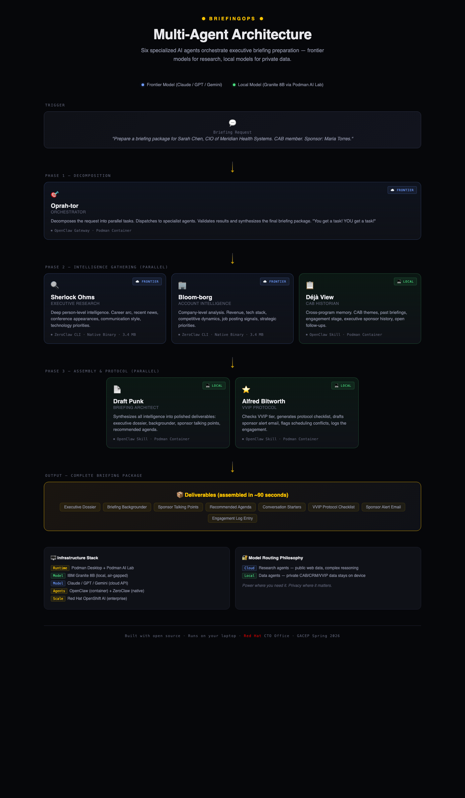

BriefingClaw — Multi-Agent Executive Briefing Intelligence
"The connective tissue between your programs — automated."
BriefingClaw is a multi-agent AI system that automates executive briefing preparation. Eight specialized agents orchestrate in parallel to transform a single briefing request into a complete intelligence package — executive dossier, company brief, sponsor talking points, recommended agenda, VVIP protocol checklist, sponsor readiness assessment, success probability verdict, and engagement log — in approximately 90 seconds.
Built for the GACEP Spring 2026 Conference session: "One Customer, Many Doors: Aligning EBC, Advisory & Executive Programs for Maximum Impact"
Presenters: Jan Mark Holzer (Red Hat CTO Office) & Kristin Waitkus
Getting Started
Open index.html in a browser to navigate between all demo pages and resources. The navigation landing page links to both dashboards (original and Red Hat branded), the architecture diagram, the standalone persona gallery, the multi-contact briefing mode, the post-briefing feedback loop, the documentation set, and the enterprise deployment guide. It is the recommended entry point for first-time users and for orienting an audience at the start of a presentation.
Table of Contents
- Getting Started
- Why BriefingClaw
- Architecture Overview
- The Eight Agents
- Execution Flow
- Model Routing
- Technology Stack
- Repository Structure
- Demo Scenario
- Quick Start
- Documentation
- Session Context
Why BriefingClaw
Executive briefing preparation typically requires 4-6 hours of manual work per visitor: researching the executive, analyzing the company, reviewing past engagement history across disconnected systems (CRM, SAB records, EBC logs, ESP tracking), assembling documents, and coordinating VVIP protocol. Information silos between programs mean critical context gets lost — overdue commitments, unmet promises, relationship history.
BriefingClaw demonstrates that agentic AI can:
- Collapse that 4-6 hour workflow into ~90 seconds
- Connect the dots across programs that humans routinely miss (the "connective tissue")
- Surface risk signals like overdue action items before they become trust-destroying moments
- Run entirely on a laptop with no data leaving the device for sensitive operations
The system is not just about speed — it is about cross-program awareness that no single human consistently achieves across Executive Briefing Centers (EBC), Strategic Advisory Boards (SAB), and Executive Sponsorship Programs (ESP).
Architecture Overview
BriefingClaw uses a hub-and-spoke multi-agent architecture. A central orchestrator decomposes requests and dispatches work to seven specialized agents across three execution phases.
Interactive diagram: Open
briefingclaw-architecture.htmlin a browser for a detailed, interactive visualization of the architecture, execution flow, and infrastructure stack.

+-----------------+
| Briefing |
| Request |
+--------+--------+
|
Phase 0: Trigger
|
+--------v--------+
| Oprah-tor |
| (Orchestrator) |
+--------+--------+
|
Phase 1: Intelligence Gathering (parallel)
/ | \
+--------v---+ +------v------+ +----v--------+
| Sherlock | | Bloom-borg | | Deja View |
| Ohms | | (Account | | (SAB |
| (Executive | | Intel) | | Historian) |
| Research) | +------+------+ +----+--------+
+--------+---+ | |
\ | /
+------------+-------------+
|
Phase 2: Assembly (parallel)
/ | \
+----------v------+ +--------v-------+ +-------v--------+
| Draft Punk | | Alfred | | Sponsor Coach |
| (Briefing | | Bitworth | | (Readiness |
| Architect) | | (VVIP Protocol)| | Assessment) |
+----------+------+ +--------+-------+ +-------+--------+
\ | /
+-----------------+-----------------+
|
Phase 3: Synthesis
|
+--------v--------+
| The Oddsfather |
| (Success |
| Prediction) |
+--------+--------+
|
+--------v--------+
| Complete |
| Briefing |
| Package |
+-----------------+
The Eight Agents
| # | Agent | Codename | Role | Model | Framework |
|---|---|---|---|---|---|
| 1 | Orchestrator | Oprah-tor | Decomposes requests, dispatches agents, validates outputs, synthesizes final package. Enforces 25s hard timeouts on research agents with graceful degradation | Frontier (cloud) | OpenClaw Gateway |
| 2 | Executive Research | Sherlock Ohms | Deep person-level intelligence: career arc, recent activity, communication style, tech priorities | Frontier (cloud) | ZeroClaw CLI |
| 3 | Account Intelligence | Bloom-borg | Company-level intelligence: financials, tech stack, competitive landscape, strategic priorities | Frontier (cloud) | ZeroClaw CLI |
| 4 | SAB Historian | Deja View | Cross-program memory: SAB membership, past briefings, engagement stage, open follow-ups, SAB theme trend analysis | Local (Granite 8B) | OpenClaw Skill |
| 5 | Briefing Architect | Draft Punk | Document assembly: dossier, backgrounder, talking points, agenda, conversation starters | Local (Granite 8B) | OpenClaw Skill |
| 6 | VVIP Protocol | Alfred Bitworth | Operational protocol: VVIP tier, checklist, sponsor alerts, scheduling, engagement logging | Local (Granite 8B) | OpenClaw Skill |
| 7 | Sponsor Coach | Sponsor Coach | Readiness assessment micro-agent: scores sponsor preparation, flags coaching gaps, generates talking-point drills | Local (Granite 8B) | OpenClaw Skill |
| 8 | Success Prediction | The Oddsfather | Phase 3 synthesis: calculates briefing success probability, surfaces the verdict, identifies outcome risks and levers | Local (Granite 8B) | OpenClaw Skill |
Agent Details
Oprah-tor (Orchestrator) — The air traffic controller. Parses incoming briefing requests, extracts key entities (visitor name, company, date, sponsor), dispatches work to the seven specialist agents in the correct phase order, enforces a 25-second hard timeout on the research agents with graceful degradation when the frontier network is flaky, validates that returned data meets quality thresholds, and synthesizes the final deliverable package.
Sherlock Ohms (Executive Research) — Performs deep web research on the visiting executive. Produces a profile covering career arc, recent public activity (last 6 months prioritized), technology priorities, communication style indicators, and personalized conversation starters. Every claim is sourced and confidence-rated.
Bloom-borg (Account Intelligence) — Researches the visitor's company. Delivers a structured brief covering business overview, financial highlights, recent news (last 90 days), technology landscape (derived from job postings and announcements), competitive dynamics, and strategic opportunities with briefing relevance.
Deja View (SAB Historian) — The "connective tissue" agent and the critical differentiator. Reads from internal program data (SAB meeting notes, CRM records, engagement history, VVIP roster) to build a cross-program relationship view. Identifies SAB membership, past briefing outcomes, overdue commitments, open follow-ups, and relationship stage progression. This agent catches what humans miss.
Draft Punk (Briefing Architect) — Synthesizes intelligence from all agents into five polished deliverables: (1) Executive Dossier (1-page quick reference), (2) Briefing Backgrounder (2-page comprehensive prep), (3) Sponsor Talking Points (for executive sponsor drop-in), (4) Recommended Agenda (time-blocked with rationales), (5) Conversation Starters (3 personalized openers).
Alfred Bitworth (VVIP Protocol) — Handles the operational layer. Determines VVIP tier (Platinum/Gold/Silver/Standard), generates a protocol checklist with assignees and deadlines, drafts a sponsor alert email, performs scheduling conflict checks, and creates an engagement log entry for future reference.
Sponsor Coach — A readiness assessment micro-agent that runs in parallel with Draft Punk and Alfred Bitworth. Scores the executive sponsor's preparation state (awareness of open commitments, familiarity with the visitor's recent moves, comfort with the SAB themes) and produces a short coaching brief: what to review, what to avoid, and the exact phrases that should show up in the sponsor drop-in. Designed to prevent the common failure mode where the sponsor walks in cold.
The Oddsfather (Success Prediction) — Phase 3 synthesis agent that runs after all Phase 2 deliverables are assembled. Reviews the full package, the critical flags, the engagement history trend, and the sponsor readiness score to generate a success probability verdict for the briefing (expressed as a percentage and a plain-language call). Surfaces the top three outcome risks and the top three levers that could shift the outcome. The Oddsfather's verdict is the final money moment of the pipeline.
Execution Flow
Input example:
I have a briefing tomorrow with Sarah Chen, CIO of Meridian Health Systems.
She is a SAB member. Her sponsor is Maria Torres.
Phase 0 — Trigger: Request enters the OpenClaw Gateway (port 18789).
Phase 1 — Intelligence Gathering (parallel):
- Sherlock Ohms researches Sarah Chen via web (frontier model + Tavily search)
- Bloom-borg researches Meridian Health Systems via web (frontier model + Tavily search)
- Deja View queries internal data files for SAB records, past briefings, CRM data, VVIP status (local Granite model)
Phase 2 — Assembly (parallel):
- Draft Punk synthesizes all Phase 1 outputs into five documents (local Granite model)
- Alfred Bitworth generates protocol checklist and sponsor alert (local Granite model)
- Sponsor Coach produces the sponsor readiness score and coaching brief (local Granite model)
Phase 3 — Synthesis:
- The Oddsfather reviews the full package and generates the success probability verdict (local Granite model)
- Oprah-tor validates all outputs and assembles the final briefing package
Output: Complete briefing package with 10 deliverables plus critical flags and the success verdict:
- Executive Dossier
- Briefing Backgrounder
- Sponsor Talking Points
- Recommended Agenda
- Conversation Starters
- VVIP Protocol Checklist
- Sponsor Alert Draft
- Engagement Log Entry
- Sponsor Readiness Brief (Sponsor Coach)
- Success Probability Verdict (The Oddsfather)
Model Routing
BriefingClaw uses a dual-model strategy that balances capability with data privacy:
| Tier | Model | Agents | Rationale |
|---|---|---|---|
| Frontier (cloud) | Claude / GPT / Gemini (configurable) | Oprah-tor, Sherlock Ohms, Bloom-borg | Complex reasoning, web search, multi-step research |
| Local (on-device) | IBM Granite 8B (via Podman AI Lab) | Deja View, Draft Punk, Alfred Bitworth, Sponsor Coach, The Oddsfather | Private data never leaves the laptop; structured tasks that fit a smaller model |
This split ensures that sensitive customer data (SAB records, CRM exports, VVIP preferences, engagement history) is processed exclusively by the local model. The frontier model only handles publicly available information gathered via web search.
Technology Stack
| Component | Technology | Role |
|---|---|---|
| Local Model | IBM Granite 8B | Open-source LLM served locally via Podman AI Lab |
| Agent Framework (container) | OpenClaw | Gateway + skill-based agents (Oprah-tor, Deja View, Draft Punk, Alfred Bitworth) |
| Agent Framework (native) | ZeroClaw | Lightweight CLI agents (Sherlock Ohms, Bloom-borg) — ~3.4 MB binary |
| Containers | Podman | Rootless, daemonless container engine (Docker-compatible) |
| Web Search | Tavily API | Real-time web research for frontier agents |
| Enterprise Path | Red Hat OpenShift AI | Production-scale deployment (referenced, not required for demo) |
Key properties:
- Fully open source — every component from model to runtime
- Laptop-portable — runs on a MacBook Pro with 16 GB RAM
- Air-gap capable — local agents work without internet
- No data exfiltration — sensitive data processed only by the on-device model
Repository Structure
gacep-demo/
|
+-- index.html Navigation landing page with persona gallery
+-- briefingclaw.sh Interactive CLI for demo management
+-- briefingclaw-dashboard.html Live demo dashboard (original dark theme, improved readability)
+-- briefingclaw-dashboard-redhat.html Live demo dashboard (Red Hat branded, improved readability)
+-- briefingclaw-architecture.html Visual architecture diagram (HTML)
+-- briefingclaw-personas.html Standalone filterable persona gallery (8 personas)
+-- briefingclaw-multicontact.html Multi-contact group briefing mode (pick 2-5 of 9 contacts)
+-- briefingclaw-postbriefing.html Post-briefing feedback loop with Oddsfather calibration
+-- README.md This file
|
+-- agents/ Agent skill definitions
| +-- orchestrator/SKILL.md Oprah-tor: request decomposition & synthesis
| +-- executive-research/SKILL.md Sherlock Ohms: person-level web research
| +-- account-intelligence/SKILL.md Bloom-borg: company-level web research
| +-- sab-historian/SKILL.md Deja View: cross-program history lookup
| +-- briefing-architect/SKILL.md Draft Punk: document assembly
| +-- vvip-protocol/SKILL.md Alfred Bitworth: protocol & notifications
| +-- sponsor-coach/SKILL.md Sponsor Coach: readiness assessment
| +-- oddsfather/SKILL.md The Oddsfather: success probability verdict
|
+-- config/ Infrastructure configuration
| +-- env.example API key template (copy to .env)
| +-- openclaw-config.yml OpenClaw gateway & skill routing
| +-- zeroclaw-config.toml ZeroClaw agent profiles
| +-- podman-compose.yml Container orchestration manifest
|
+-- demo-data/ Simulated data for eight contact scenarios
| +-- sab-meeting-notes.md SAB meeting records (Q1 2026, Q4 2025, 8 contacts)
| +-- crm-export.json CRM records (8 accounts, 20+ contacts)
| +-- vvip-roster.json VVIP tiers & full preferences (8 contacts)
| +-- engagement-history.md Engagement timelines (8 complete narratives)
|
+-- demo-deliverables/ Sample markdown reference files (7 files)
| +-- sarah-chen/ Dossier, agenda, VVIP checklist
| +-- david-park/ Dossier, agenda
| +-- rachel-morrison/ Dossier, agenda
| Note: Key deliverables for all 8 contacts are embedded in the dashboards
|
+-- docs/ Extended documentation
+-- ARCHITECTURE.md System design document
+-- BUILD-GUIDE.md Step-by-step setup instructions
+-- DEMO-SCRIPT.md Beat-by-beat presentation script
+-- ENTERPRISE-DEPLOYMENT.md Scaling from laptop to OpenShift AI
Key Files Explained
index.html — Navigation landing page. Central launch point with a persona gallery (all 8 scenarios with thumbnails and tension summaries) and direct links to both dashboards, the architecture diagram, the documentation set, the enterprise deployment guide, and the GitHub repository. Open this first when demonstrating the system to someone new.
briefingclaw.sh — Interactive CLI wrapper for the entire demo lifecycle. Provides commands for setup, infrastructure startup, demo environment configuration, system health checks, preflight validation, standalone agent runs, rehearsal preview mode, and backup video recording. Designed so a non-technical presenter can operate the system.
briefingclaw-dashboard.html — Live demo dashboard with animated pipeline visualization (original dark theme). Optimized for projector readability with larger fonts and generous spacing between agent nodes. Features a contact dropdown selector with 8 scenarios (3 serious + 5 fun personas) and unique simulation timelines per contact. Risk badges appear on completed deliverable cards (red = critical, amber = warning, green = positive) so the audience can scan the outcome at a glance. Key deliverables for all 8 contacts are embedded as clickable modal content — click any completed card to view the full formatted document. Includes a PDF export button that produces a printable briefing package for any selected persona. A three-state mode badge in the header shows LIVE (all infrastructure responding), LOCAL ONLY (Granite 8B reachable but the OpenClaw gateway is not), or SIMULATED (no services responding). Session events are captured to localStorage telemetry — press T to download the full JSON log. The footer includes a GitHub repository link. Polls live infrastructure when running, falls back to animated simulation. ?autostart URL parameter for hands-free launch. Keyboard: Space/Enter start, Escape reset, F fullscreen, T download telemetry.
briefingclaw-dashboard-redhat.html — Red Hat branded edition with identical functionality. Reskinned with Red Hat Display/Text/Mono fonts, PatternFly dark theme surfaces (#151515/#1F1F1F/#292929), Red Hat Red (#EE0000) primary accent, PatternFly blue for frontier agents, PatternFly teal for local agents. Same readability improvements, risk badges, PDF export, LIVE/LOCAL ONLY/SIMULATED mode detection, telemetry logging (T key), GitHub footer link, all 8 contact scenarios, and embedded deliverables. Use this version for Red Hat-affiliated presentations.
briefingclaw-architecture.html — Standalone HTML page with an interactive visualization of the multi-agent execution flow. Shows the four-phase pipeline (Phase 1 intelligence gathering; Phase 2 assembly; Phase 3 three-column assembly including Sponsor Coach; Phase 4 The Oddsfather synthesis), model routing decisions, and infrastructure stack. Useful as a visual aid during presentations.
briefingclaw-personas.html — Standalone persona gallery. Filterable card view of all 8 personas with tier and type filters, rich stat cards, color-coded drama callouts, top-3 priorities per persona, and action buttons (Run Demo to launch the dashboard for that persona, Open Dossier to jump straight to the deliverable view). Designed as a warm-up or reference page that attendees can browse before the main demo.
briefingclaw-multicontact.html — Multi-contact briefing mode. Pick 2-5 contacts from 9 total across 3 companies (Sarah Chen / Tom Richards / Dr. Priya Kapoor at Meridian, David Park / Karen Wu / Marcus Thompson at Apex, Rachel Morrison / Anil Desai / Frank Reeves at TerraScale). Outputs a shared company context, a buying center role matrix (economic / champion / technical / blocker / influencer), cross-contact dynamics (alignments / tensions / conflicts), a recommended briefing order (blocker first, champion last), a unified agenda, coordination risks, and The Oddsfather's group verdict with coordination adjustments. Self-contained with no backend.
briefingclaw-postbriefing.html — Post-briefing feedback loop. Form for logging briefing outcomes: contact dropdown, NPS score buttons (0-10), commitments list, actual outcome, relationship stage signal, and debrief notes. A live analysis panel on the right shows The Oddsfather's prediction calibration (predicted vs actual with drift classification), Deja View's relationship stage update preview, and recent submission history. Submissions persist to browser localStorage under the briefingclaw-feedback key (capped at 50 entries) so rehearsal data survives between sessions without any server.
docs/ENTERPRISE-DEPLOYMENT.md — Guide for scaling BriefingClaw from the laptop prototype shown in the demo to an enterprise deployment on Red Hat OpenShift AI. Covers reference architecture, multi-tenant considerations, governance controls, integration patterns with existing CRM and EBC tooling, and the migration path from OpenClaw/ZeroClaw to production agent runtimes.
config/env.example — Template for API keys. Supports multiple frontier providers (Anthropic, OpenAI, Google) and the Tavily web search API. The local Granite model requires no API key. Copy to .env and fill in your keys.
config/openclaw-config.yml — Configures the OpenClaw gateway: which skills to load, model routing overrides (frontier vs. local per agent), workspace file mounts, external agent invocation (ZeroClaw subprocesses), and tool permissions.
config/zeroclaw-config.toml — Configures ZeroClaw agent profiles for Sherlock Ohms and Bloom-borg: model provider, skill file path, iteration limits, and web search parameters.
config/podman-compose.yml — Container manifest for the OpenClaw service. Mounts agent skill files and demo data as read-only volumes, exposes the gateway on port 18789, and connects to the Granite model served by Podman AI Lab on port 8001.
Demo Scenarios
The system includes eight demo scenarios, each showcasing different relationship challenges and cross-program intelligence patterns:
| Scenario | Contact | Company | Tier | Key Drama |
|---|---|---|---|---|
| Overdue Commitments | Sarah Chen, CIO | Meridian Health Systems | Gold | AI governance architecture overdue from Feb SAB |
| Retention Crisis | David Park, SVP Technology | Apex Financial Group | Gold | Failed migration, Azure pitching, 3-month renewal |
| Champion Under Stress | Rachel Morrison, CTO | TerraScale Energy | Platinum | P1 outage damaged trust, board presentation in 30 days |
| Viral Scaling Crisis | Pepper Minton, CTO | SnackStack Technologies | Gold | Recipe AI went viral on TikTok, crashed production |
| Win-Back / Re-engagement | Ziggy Stardust-Chen, VP Platform Eng | Quantum Pretzel Corp | Silver | Left SAB feeling ignored, AWS courting, renewal at risk |
| Security Blocker | Luna Wavelength, CIO | GalactiCorp Space Industries | Platinum | $8M satellite deal blocked by CISO security audit |
| Internal Politics | Max Bandwidth, SVP Digital | Thunderbolt Logistics | Gold | AI pilot saved $4M but VP Ops blocking scale-up |
| First Briefing | Sage Cloudberry, CIO | WonderPaws Pet Wellness | Standard | Greenfield opportunity, evaluating Red Hat vs VMware |
Each scenario demonstrates cross-program intelligence across SAB records, EBC history, CRM data, support escalations, and VVIP protocol. The dashboard includes a contact dropdown to switch between all eight scenarios during a live demo.
Quick Start
Full step-by-step instructions: Build Guide
Prerequisites
- macOS with Homebrew
- 16 GB RAM minimum, 30 GB free disk
- API key for at least one frontier provider (Anthropic, OpenAI, or Google)
- Tavily API key for web search
Steps
# 1. Install dependencies
brew install podman podman-compose jq
# 2. Install Podman Desktop + AI Lab extension, download Granite 8B
# 3. Install ZeroClaw
curl -fsSL https://install.zeroclaw.dev | sh
# 4. Clone and configure
cp config/env.example config/.env
# Edit config/.env with your API keys
# 5. Start infrastructure
./briefingclaw.sh start
# 6. Run the demo
./briefingclaw.sh demo
# Or open http://127.0.0.1:18789 and type your briefing request
Alternatively, use the automated setup:
./briefingclaw.sh setup # First-time configuration wizard
./briefingclaw.sh start # Launch all infrastructure
./briefingclaw.sh demo # Set up the demo environment
Documentation
| Document | Purpose |
|---|---|
| Architecture | Multi-agent system design, agent roster, execution flow, infrastructure stack |
| Build Guide | Complete setup instructions from prerequisites through conference-day checklist |
| Demo Script | Beat-by-beat presentation script with timing, narrative cues, and contingency plans |
| Enterprise Deployment | Scaling from laptop prototype to Red Hat OpenShift AI production deployment |
| User Guide | Practical guide for operating BriefingClaw: installation, configuration, running demos, troubleshooting |
Session Context
This system was designed for the GACEP Spring 2026 Conference session demonstrating how agentic AI can operationalize the "Program of Programs" framework — connecting Executive Briefing Centers, Strategic Advisory Boards, and Executive Sponsorship Programs through automated intelligence and cross-program awareness.
The demo shows that the tooling to build this kind of multi-agent system exists today, runs on commodity hardware, and uses entirely open-source components. The path from laptop prototype to enterprise deployment runs through Red Hat OpenShift AI.
Built with open source. Runs on your laptop. No data leaves the building.
BriefingClaw User Guide
A practical guide for installing, configuring, and operating the BriefingClaw multi-agent executive briefing system.
Table of Contents
- Prerequisites
- Installation
- Configuration
- Starting the System
- Running a Briefing Request
- Using the Dashboard
- Using the CLI (briefingclaw.sh)
- Running Individual Agents
- Understanding the Output
- Demo Data Reference
- Conference Day Checklist
- Troubleshooting
- Customization
1. Prerequisites
Hardware
- MacBook Pro (Apple Silicon or Intel)
- 16 GB RAM minimum (Granite 8B requires ~6 GB)
- 30 GB free disk space (model weights, containers, and workspace)
- USB-C adapter for venue projection (if presenting live)
Software (installed in Section 2)
- macOS with Homebrew
- Podman Desktop with Podman CLI
- Podman AI Lab extension
- ZeroClaw CLI
- OpenClaw container image
- jq (JSON processor)
API Keys
You need at minimum:
- One frontier LLM provider — Anthropic (Claude), OpenAI (GPT), or Google (Gemini)
- Tavily API key — for web search capabilities used by Sherlock Ohms and Bloom-borg
Tip: After cloning, open
index.htmlin a browser to navigate between all demo pages and resources. It's the fastest way to get oriented.
Sign up for keys at:
- Anthropic: https://console.anthropic.com
- OpenAI: https://platform.openai.com
- Google AI: https://aistudio.google.com
- Tavily: https://tavily.com
2. Installation
Step 2.1 — Install core tools
# Install Homebrew if not present
/bin/bash -c "$(curl -fsSL https://raw.githubusercontent.com/Homebrew/install/HEAD/install.sh)"
# Install Podman and utilities
brew install podman podman-compose jq
Step 2.2 — Install Podman Desktop and AI Lab
- Download Podman Desktop from https://podman-desktop.io
- Open Podman Desktop and complete the initial setup
- Go to Extensions and install Podman AI Lab
- In AI Lab, download the IBM Granite 8B Instruct model
- Start the model service — it will serve on
http://127.0.0.1:8001/v1
Verify the model is running:
curl -s http://127.0.0.1:8001/v1/models | jq '.data[0].id'
You should see the Granite model ID in the output.
Step 2.3 — Install ZeroClaw
curl -fsSL https://install.zeroclaw.dev | sh
Verify:
zeroclaw --version
Step 2.4 — Install OpenClaw
Pull the OpenClaw container image:
podman pull openclaw/openclaw:latest
Step 2.5 — Clone this repository
git clone https://github.com/<your-account>/GACEP-Spring-2026-demo.git
cd GACEP-Spring-2026-demo
3. Configuration
Step 3.1 — Set up API keys
cp config/env.example config/.env
Edit config/.env and add your API keys:
# Choose ONE frontier provider (uncomment the one you're using):
ANTHROPIC_API_KEY=sk-ant-your-key-here
# OPENAI_API_KEY=sk-your-key-here
# GOOGLE_API_KEY=your-key-here
# Web search (required for Sherlock Ohms and Bloom-borg):
TAVILY_API_KEY=tvly-your-key-here
The local Granite model does not require an API key.
Step 3.2 — Configure ZeroClaw
mkdir -p ~/.config/zeroclaw
cp config/zeroclaw-config.toml ~/.config/zeroclaw/config.toml
The ZeroClaw config defines two agent profiles:
- sherlock-ohms — Executive research agent (uses frontier model + web search)
- bloom-borg — Account intelligence agent (uses frontier model + web search)
Both profiles point to their respective SKILL.md files and use the Tavily API for web search.
Step 3.3 — Set up the workspace
Create the workspace directory structure that OpenClaw expects:
mkdir -p ~/briefingclaw/agents
mkdir -p ~/briefingclaw/workspace
# Copy agent skill files
cp -r agents/* ~/briefingclaw/agents/
# Copy demo data to workspace
cp demo-data/* ~/briefingclaw/workspace/
Step 3.4 — Verify configuration
Check that the OpenClaw config references are correct:
config/openclaw-config.yml— skill directories and workspace pathsconfig/podman-compose.yml— volume mounts match your local paths
4. Starting the System
Option A — Using the CLI wrapper (recommended)
# First-time setup (interactive wizard)
./briefingclaw.sh setup
# Start all infrastructure
./briefingclaw.sh start
# Check system health
./briefingclaw.sh status
For quick rehearsal without booting infrastructure: ./briefingclaw.sh preview. This opens the dashboards in a browser and lets you rehearse the demo beats against the animated simulation. It skips all the Podman/model/OpenClaw health checks and is ideal for practicing narration, timing, and persona switching at your desk or on a plane.
Option B — Manual startup
# 1. Start Podman machine (if not running)
podman machine start
# 2. Ensure Granite 8B is serving via Podman AI Lab
# (Open Podman Desktop > AI Lab > Models > Start)
# 3. Start OpenClaw container
cd config
podman-compose up -d
# 4. Verify OpenClaw is healthy
curl -s http://127.0.0.1:18789/health | jq .
Verifying the stack
| Component | How to check | Expected result |
|---|---|---|
| Podman | podman machine info | Machine running |
| Granite 8B | curl -s http://127.0.0.1:8001/v1/models | Model ID returned |
| OpenClaw | curl -s http://127.0.0.1:18789/health | {"status": "healthy"} |
| ZeroClaw | zeroclaw --version | Version string |
| API keys | ./briefingclaw.sh status | Keys configured |
5. Running a Briefing Request
Via the OpenClaw Gateway UI
- Open your browser to
http://127.0.0.1:18789 - You will see the Oprah-tor orchestrator chat interface
- Type (or paste) a briefing request:
I have a briefing tomorrow with Sarah Chen, CIO of Meridian Health Systems.
She is a SAB member. Her executive sponsor is Maria Torres.
- Oprah-tor will:
- Parse the request and identify key entities
- Dispatch Sherlock Ohms, Bloom-borg, and Deja View in parallel (Phase 1)
- Validate returned intelligence
- Dispatch Draft Punk and Alfred Bitworth (Phase 2)
- Synthesize and deliver the final briefing package
- The complete output appears in the chat as structured markdown documents
Via the CLI
# Full demo environment (opens terminal tabs + browser)
./briefingclaw.sh demo
# Or run a quick request directly through the CLI
./briefingclaw.sh sherlock "Sarah Chen CIO Meridian Health Systems"
./briefingclaw.sh bloomborg "Meridian Health Systems"
6. Using the Dashboard
The interactive dashboard (briefingclaw-dashboard.html) provides an animated visualization of the entire agent pipeline. It is designed for conference presentations and works both as a live monitoring tool and as a standalone animated simulation.
Opening the Dashboard
# Open in your default browser
open briefingclaw-dashboard.html
# Or with autostart (simulation begins immediately)
open "briefingclaw-dashboard.html?autostart"
Dashboard Layout
| Section | Description |
|---|---|
| Pipeline Visualization | Top section. Shows all 8 agents as animated nodes with particle flow along connection paths. Agents glow when working and get a green checkmark when complete. |
| Control Bar | Pre-populated briefing request, "Start Demo" and "Reset" buttons, elapsed timer, mode badge (LIVE / LOCAL ONLY / SIMULATED), and PDF Export button. |
| Infrastructure Status | Bottom-left panel. Pulsing status dots for Podman, Granite 8B, OpenClaw, and ZeroClaw. Green = connected, red = disconnected. |
| Agent Activity | Bottom-right panel. Scrolling log with typewriter animation showing each agent's work in real time. |
| Deliverables | Cards that light up gold as each document is completed. Completed cards show risk badges summarizing the outcome and are clickable to open the full formatted document. |
| Critical Flags | Slide-in alerts for overdue action items, open follow-ups, and opportunities. |
| Footer | Contains a GitHub repository link for attendees who want to try the system themselves. |
Keyboard Shortcuts
| Key | Action |
|---|---|
| Space / Enter | Start the demo simulation |
| Escape | Reset to initial state |
| F | Toggle fullscreen (ideal for projectors) |
| T | Download telemetry JSON for the current session |
Risk Badges on Deliverable Cards
Completed deliverable cards show a coloured badge summarising the outcome so the audience can read the story at a glance without opening each card:
| Badge colour | Meaning |
|---|---|
| Red | Critical — an overdue commitment, escalation, or blocker surfaced in the briefing |
| Amber | Warning — an open follow-up, unresolved risk, or stress signal |
| Green | Positive — strong relationship signals, untapped opportunities, champion momentum |
Badges appear as each card completes and carry the same colour into the PDF export.
PDF Export
A PDF Export button in the control bar produces a printable briefing package for the currently selected persona. The export includes the executive dossier, backgrounder, talking points, agenda, VVIP protocol checklist, sponsor readiness brief, and the Oddsfather's success verdict. Use this to hand a polished artefact to attendees who ask to take the output home.
Mode Badge: LIVE / LOCAL ONLY / SIMULATED
The dashboard polls http://127.0.0.1:8001 (Granite model) and http://127.0.0.1:18789 (OpenClaw gateway) every 5 seconds and shows one of three mode badges in the header:
| Badge | Meaning |
|---|---|
| LIVE (green) | Both the Granite 8B model and the OpenClaw gateway are responding. Full stack available. |
| LOCAL ONLY (amber) | Granite 8B is reachable but the OpenClaw gateway is down. Local agents (Deja View, Draft Punk, Alfred Bitworth, Sponsor Coach, The Oddsfather) can still run via direct model calls; frontier agents are unavailable. |
| SIMULATED (gold) | Neither service is responding. The animated scripted sequence runs standalone with no backend. |
The animated simulation runs identically in all three modes. It is a scripted 42-second sequence sourced from the real demo data files, designed to match the timing of the live demo script.
Telemetry Logging
Every session event — button clicks, persona switches, phase transitions, mode changes, PDF exports — is captured to the browser's localStorage as a rolling telemetry log. Press T at any time to download the full session log as JSON. This is useful for debugging a rehearsal that went sideways, for comparing timing across venues, and for post-session instrumentation reviews.
Contact Dropdown
The dashboard includes a dropdown selector to switch between three demo scenarios:
| Contact | Company | Tier | Scenario |
|---|---|---|---|
| Sarah Chen | Meridian Health Systems | Gold | Overdue commitments, approaching champion |
| David Park | Apex Financial Group | Gold | Retention crisis, Azure competitor, failed migration |
| Rachel Morrison | TerraScale Energy | Platinum | P1 outage, champion under stress, board presentation |
| Pepper Minton | SnackStack Technologies | Gold | Viral TikTok scaling crisis, production crashed |
| Ziggy Stardust-Chen | Quantum Pretzel Corp | Silver | SAB alumni win-back, AWS courting, renewal at risk |
| Luna Wavelength | GalactiCorp Space Industries | Platinum | $8M deal blocked by CISO security audit |
| Max Bandwidth | Thunderbolt Logistics | Gold | AI pilot $4M savings, VP Ops blocking scale-up |
| Sage Cloudberry | WonderPaws Pet Wellness | Standard | First briefing, evaluating Red Hat vs VMware |
Select a contact from the dropdown, then click "Start Demo". Each scenario has its own timeline with distinct activity feed messages, critical flags, and narrative arc.
Clickable Deliverables
After the simulation completes (or while running), all 8 completed deliverable cards are clickable. Clicking opens a formatted modal viewer with complete HTML content for that deliverable. Key deliverables for all 8 contacts are embedded in the dashboard with clickable modal content. Close the modal with the X button, clicking the overlay, or pressing Escape.
Red Hat variant: For Red Hat-affiliated presentations, use
briefingclaw-dashboard-redhat.htmlinstead. It has identical functionality with Red Hat Display/Text/Mono fonts, PatternFly dark theme, and Red Hat Red accents.
Key Moments in the Simulation
All eight scenarios follow the same phase structure but surface different intelligence:
| Time | Event |
|---|---|
| 0-7s | Oprah-tor parses the request and dispatches Phase 1 agents |
| 7-20s | Sherlock, Bloom-borg, and Deja View work in parallel |
| ~15s | Deja View flags the critical issue (varies by contact) |
| 21-37s | Draft Punk and Alfred Bitworth produce deliverables progressively |
| 38-42s | Oprah-tor synthesizes the final package (8/8 deliverables) |
Additional Views & Modes
Three standalone HTML pages extend the dashboard experience with specialized workflows. All three are self-contained (no backend required) and can be opened directly from index.html:
| Page | Purpose |
|---|---|
briefingclaw-personas.html | Standalone filterable persona gallery |
briefingclaw-multicontact.html | Multi-contact group briefing mode |
briefingclaw-postbriefing.html | Post-briefing feedback loop with Oddsfather calibration |
Multi-Contact Briefing Mode
Open briefingclaw-multicontact.html to run a group briefing scenario where multiple stakeholders from the same company attend together. This is the mode to use when the audience asks "what if there's more than one person in the room?"
How to use:
- Open
briefingclaw-multicontact.html(or click its card on theindex.htmllanding page). - Pick 2 to 5 contacts from the picker. The picker shows 9 contacts across 3 companies:
- Meridian Health Systems — Sarah Chen, Tom Richards, Dr. Priya Kapoor
- Apex Financial Group — David Park, Karen Wu, Marcus Thompson
- TerraScale Energy — Rachel Morrison, Anil Desai, Frank Reeves
- The Start button enables once at least 2 contacts are selected and disables again if you exceed 5.
- Click Start to generate the group briefing.
What outputs to expect:
| Panel | Contents |
|---|---|
| Shared Company Context | One unified company brief (not repeated per contact) — business overview, recent news, strategic priorities |
| Buying Center Role Matrix | Each contact mapped to a role: economic, champion, technical, blocker, or influencer. This is how to interpret the group dynamics — the blocker is usually the hardest conversation, the champion is the one with the budget conviction |
| Cross-Contact Dynamics | Alignments (who agrees with whom), tensions (friction points surfaced by SAB history), and outright conflicts (directly opposing agendas) |
| Recommended Briefing Order | A suggested agenda sequence — conventionally blocker first, champion last, so the blocker's objections get addressed before the champion closes the room |
| Unified Agenda | A single time-blocked agenda tuned to the group, not a per-person agenda |
| Coordination Risks | Things that can derail a group briefing — scheduling conflicts, awkward hierarchy moments, topics one person should not hear in front of another |
| Oddsfather Group Verdict | Success probability expressed as a percentage with coordination adjustments layered on top of the per-person verdicts — a low coordination score can drop the group probability even when every individual would score well |
How to interpret the role matrix and group verdict: A briefing with a champion plus a blocker is harder than a briefing with two champions, even if the individual relationship stages look strong, because the blocker's veto power is the constraint. The Oddsfather's group verdict already accounts for this — a drop of 15+ percentage points between the individual and group numbers is the signal that coordination, not content, is the problem to solve.
Persona Gallery
Open briefingclaw-personas.html for a standalone filterable persona gallery that shows all 8 personas as rich cards. Use this as a warm-up view before the main demo or as a reference whenever you need to remember which contact has which drama.
How to use:
- Open
briefingclaw-personas.html(or click the Persona Gallery card onindex.html). - Use the tier filter to narrow by VVIP tier (Platinum, Gold, Silver, Standard).
- Use the type filter to narrow by scenario type (serious enterprise vs. fun persona).
- Each card shows: stat block (tier, industry, relationship stage), a color-coded drama callout (the hook of the scenario), and the contact's top-3 priorities.
Action buttons on each card:
| Button | Action |
|---|---|
| Run Demo | Launches the dashboard pre-loaded with that persona (passes the persona through the query string) |
| Open Dossier | Jumps directly to the deliverable modal for that persona without running the pipeline animation |
This page is the fastest way to answer "can you show me the Rachel Morrison one?" without scrolling through a dropdown.
Post-Briefing Feedback
Open briefingclaw-postbriefing.html to log a briefing outcome after the room is cleared. This is the feedback loop that makes Deja View smarter over time: every logged outcome becomes input that Deja View and The Oddsfather can use to recalibrate their predictions on the next briefing with the same contact.
Submit workflow:
- Open
briefingclaw-postbriefing.html. - On the left, fill in the debrief form:
- Contact dropdown — pick which contact the feedback is for.
- NPS score buttons (0-10) — click a single button for the visitor's net promoter score.
- Commitments list — what did we promise in the room? One per line.
- Actual outcome — what actually happened? (Plain text.)
- Relationship stage signal — did the briefing move the relationship forward, hold it, or regress it?
- Debrief notes — anything else worth capturing.
- Click Submit.
What the live analysis panel shows (right side):
| Card | Contents |
|---|---|
| Oddsfather Calibration | Shows The Oddsfather's predicted success probability against the actual outcome, with a drift classification — well calibrated, optimistic drift, pessimistic drift, or severe miss. This is how you catch a model that's systematically wrong about a persona and need to correct it. |
| Deja View Stage Update Preview | A preview of how Deja View would move the relationship stage based on the feedback (e.g., "would advance from Trusted to Champion"). |
| Recent Submissions | A scrolling history of the most recently logged outcomes. |
What localStorage stores: All submissions persist to browser localStorage under the key briefingclaw-feedback, capped at 50 entries (the oldest entries are evicted when the cap is reached). There is no server and no network call — rehearsal data stays on the laptop and survives between sessions until the browser storage is cleared.
How The Oddsfather uses the calibration: Each new feedback entry gets folded into the drift calculation. If The Oddsfather predicted 72% and the actual outcome was a clear loss, the calibration card highlights the miss and — in the production vision — the next briefing with the same contact would start with a shifted prior. For the demo, the calibration card is the artefact that shows "this is a learning loop, not a one-shot prediction."
7. Using the CLI (briefingclaw.sh)
The briefingclaw.sh script provides an interactive menu for managing the entire demo lifecycle.
Available Commands
| Command | Description |
|---|---|
./briefingclaw.sh setup | First-time configuration wizard. Creates directories, copies files, prompts for API keys. |
./briefingclaw.sh start | Launches Podman machine, AI Lab model server, and OpenClaw container. |
./briefingclaw.sh stop | Stops the OpenClaw container and optionally the model server. |
./briefingclaw.sh status | Displays system health: Podman status, model serving, API key configuration, container state. |
./briefingclaw.sh demo | Sets up the full demo environment with pre-configured terminal tabs and browser window. |
./briefingclaw.sh preview | Rehearsal mode. Opens the dashboards without running any infrastructure checks, so you can practise narration, timing, and persona switching against the animated simulation. |
./briefingclaw.sh preflight | Conference-day checklist. Run 30 minutes before your session. Validates all components. |
./briefingclaw.sh sherlock "<query>" | Run Sherlock Ohms standalone for executive research. |
./briefingclaw.sh bloomborg "<query>" | Run Bloom-borg standalone for company research. |
./briefingclaw.sh record | Guides recording a backup demo video (fallback if live demo fails). |
Typical workflow
# Day before the conference
./briefingclaw.sh setup # Configure if not done yet
./briefingclaw.sh start # Start everything
./briefingclaw.sh status # Verify all green
./briefingclaw.sh record # Record backup video
# 30 minutes before your session
./briefingclaw.sh preflight # Run the full checklist
# Showtime
./briefingclaw.sh demo # Launch the demo environment
8. Running Individual Agents
Each agent can be run independently for testing or targeted research.
Sherlock Ohms (Executive Research)
zeroclaw agent -p sherlock-ohms
# Then type: "Research Sarah Chen, CIO of Meridian Health Systems"
Produces: executive profile with career arc, recent activity, tech priorities, communication style, and conversation starters.
Bloom-borg (Account Intelligence)
zeroclaw agent -p bloom-borg
# Then type: "Research Meridian Health Systems"
Produces: company brief with business overview, financials, recent news, technology landscape, competitive dynamics, and briefing relevance.
Deja View (SAB Historian)
Runs inside the OpenClaw container. Accessed through the Oprah-tor orchestrator or directly via the OpenClaw gateway API.
Reads from workspace files:
sab-meeting-notes.mdengagement-history.mdcrm-export.jsonvvip-roster.json
Draft Punk (Briefing Architect)
Runs inside the OpenClaw container. Receives synthesized intelligence from Oprah-tor and assembles the five document deliverables.
Alfred Bitworth (VVIP Protocol)
Runs inside the OpenClaw container. Reads VVIP roster and engagement history to generate protocol checklists and sponsor alerts.
Sponsor Coach
Runs inside the OpenClaw container. Scores the executive sponsor's readiness for the drop-in, flags coaching gaps, and produces a short prep brief the sponsor can read in under two minutes.
The Oddsfather
Runs inside the OpenClaw container during Phase 3. Reviews the full deliverable package and the critical flags to generate a success probability verdict with the top risks and top levers that could shift the outcome.
9. Understanding the Output
A complete briefing package contains the following deliverables:
From Draft Punk
| Deliverable | Description | Length |
|---|---|---|
| Executive Dossier | Quick-reference card with visitor snapshot, key talking points, and critical flags | 1 page |
| Briefing Backgrounder | Comprehensive prep document weaving executive research, company intel, and engagement history | 2 pages |
| Sponsor Talking Points | Prep sheet for the executive sponsor's drop-in, with context, relationship notes, and suggested topics | 1 page |
| Recommended Agenda | Time-blocked agenda with rationale for each session, informed by visitor interests and engagement history | 1 page |
| Conversation Starters | Three personalized, non-generic openers drawn from recent activity, shared interests, or SAB themes | Short list |
From Alfred Bitworth
| Deliverable | Description |
|---|---|
| VVIP Protocol Checklist | Actionable checklist with assignees and deadlines covering pre-briefing setup, day-of arrival, and post-briefing follow-up |
| Sponsor Alert Draft | Email template for notifying the executive sponsor with context and talking points reference |
| Engagement Log Entry | Structured record of the upcoming briefing for future cross-program reference |
From Sponsor Coach
| Deliverable | Description |
|---|---|
| Sponsor Readiness Brief | Short coaching brief with the sponsor's readiness score, what to review before the drop-in, what to avoid, and the exact phrases that should show up in the conversation |
From The Oddsfather
| Deliverable | Description |
|---|---|
| Success Probability Verdict | Percentage likelihood of a successful briefing outcome, plain-language verdict, top 3 risks, and top 3 levers that could shift the outcome |
Critical Flags
The system surfaces flags that require immediate attention:
| Flag | Meaning |
|---|---|
| Red / OVERDUE | A commitment or action item has passed its deadline |
| Yellow / OPEN | An unresolved follow-up from a past engagement |
| Green / POSITIVE | Strong relationship signals (high NPS, engagement score, champion trajectory) |
| Blue / OPPORTUNITY | Untapped potential (new stakeholder, unengaged contact, adjacent use case) |
10. Demo Data Reference
The repository includes simulated data for eight demo scenarios — three serious enterprise contacts and five fun personas with whimsical names but realistic relationship dynamics.
Contact Scenarios
| Contact | Company | Industry | Tier | Key Tension |
|---|---|---|---|---|
| Sarah Chen | Meridian Health | Healthcare | Gold | Overdue AI governance commitment |
| David Park | Apex Financial | Financial Services | Gold | Failed migration, Azure threat, renewal at risk |
| Rachel Morrison | TerraScale Energy | Energy/Utilities | Platinum | P1 outage, champion credibility at stake |
| Pepper Minton | SnackStack Technologies | Food Tech | Gold | Viral TikTok crash, scaling crisis |
| Ziggy Stardust-Chen | Quantum Pretzel Corp | FinTech/Crypto | Silver | SAB alumni, AWS courting, broken promises |
| Luna Wavelength | GalactiCorp Space Industries | Aerospace | Platinum | $8M deal blocked by CISO |
| Max Bandwidth | Thunderbolt Logistics | Supply Chain | Gold | AI champion vs internal politics |
| Sage Cloudberry | WonderPaws Pet Wellness | Veterinary | Standard | First briefing, greenfield opportunity |
Data Files
sab-meeting-notes.md — Q1 2026 and Q4 2025 Strategic Advisory Board meetings with 8 contacts. Sarah led AI Governance, David led Hybrid Cloud, Rachel co-chairs, Pepper/Luna/Max contributed. Includes alumni roster (Ziggy).
crm-export.json — Eight account records with 20+ contacts, open opportunities, and support escalations. Ranges from $780M (WonderPaws) to $14.5B (GalactiCorp).
vvip-roster.json — Full VVIP profiles for all eight contacts with comprehensive preferences and protocol requirements across all tiers (Platinum, Gold, Silver, Standard).
engagement-history.md — Eight complete engagement timelines with relationship stage progression, open items, and flags. Ranges from multi-year champion relationships to first-time briefings.
Demo Deliverables
The demo-deliverables/ directory contains 7 sample markdown reference files for the original 3 contacts. Key deliverables for all 8 contacts (3 per contact) are embedded directly in both HTML dashboards as formatted modal content. The markdown files serve as templates for customization.
| Deliverable Type | Agent | All 3 Contacts |
|---|---|---|
| Executive Dossier | Draft Punk | Embedded |
| Briefing Backgrounder | Draft Punk | Embedded |
| Sponsor Talking Points | Draft Punk | Embedded |
| Recommended Agenda | Draft Punk | Embedded |
| Conversation Starters | Draft Punk | Embedded |
| VVIP Protocol Checklist | Alfred Bitworth | Embedded |
| Sponsor Alert Email | Alfred Bitworth | Embedded |
| Engagement Log Entry | Alfred Bitworth | Embedded |
Customizing demo data
To adapt the demo for a different scenario, edit the files in demo-data/. The agents read these files at runtime, so changes take effect immediately (restart the OpenClaw container if it caches workspace files).
Key consistency rules:
- Names and companies must match across all four data files
- SAB meeting dates in
sab-meeting-notes.mdshould align with entries inengagement-history.md - VVIP roster entries should reference contacts that exist in
crm-export.json - Each contact should have distinct relationship challenges and engagement history
- Overdue action items, open follow-ups, and escalations provide the "dramatic tension"
11. Conference Day Checklist
30 minutes before your session
./briefingclaw.sh preflight
This checks:
- Podman machine is running
- Granite 8B model is serving and responsive
- OpenClaw container is healthy
- ZeroClaw binary is available
- API keys are configured and valid
- Demo data files are in the workspace
- Gateway UI loads at http://127.0.0.1:18789
- Wi-Fi is connected (for frontier model agents)
- Backup video is accessible and tested
- Dashboard loads:
open briefingclaw-dashboard.html(orbriefingclaw-dashboard-redhat.htmlfor Red Hat branding) - Verify all three new pages load:
open briefingclaw-personas.html,open briefingclaw-multicontact.html,open briefingclaw-postbriefing.html— all three should render cleanly without broken elements
5 minutes before demo
- Terminal tabs are arranged (use
./briefingclaw.sh demo) - Browser is open to the gateway UI
- Dashboard tab open as fallback (briefingclaw-dashboard.html)
- Font size is large enough for projection
- Briefing request text is ready to paste
- Backup video is one click away
If things go wrong
| Problem | Fallback |
|---|---|
| Model is slow | Switch to the dashboard (briefingclaw-dashboard.html?autostart or briefingclaw-dashboard-redhat.html?autostart) |
| OpenClaw crashes | Use the dashboard for visual demo, ZeroClaw CLI for live research |
| Web search fails | Sherlock and Bloom-borg will note limited results; Deja View and local agents still work |
| Wi-Fi down | Local agents (Deja View, Draft Punk, Alfred Bitworth) still function; skip frontier agents |
| Everything fails | Switch to slides with screenshots of the output |
12. Troubleshooting
Common Issues
"Cannot connect to Podman machine"
podman machine start
podman machine info # Verify status
"Model not responding on port 8001"
- Open Podman Desktop > AI Lab > Models
- Verify Granite 8B is downloaded and the service is started
- Check with:
curl -s http://127.0.0.1:8001/v1/models
"OpenClaw container won't start"
cd config
podman-compose logs openclaw # Check error output
podman-compose down
podman-compose up -d # Restart
"ZeroClaw profile not found"
# Verify config file location
ls ~/.config/zeroclaw/config.toml
# Test profiles
zeroclaw agent -p sherlock-ohms --dry-run
zeroclaw agent -p bloom-borg --dry-run
"Tavily API key invalid"
- Verify the key in
config/.env - Test directly:
curl -s https://api.tavily.com/search -d '{"api_key":"YOUR_KEY","query":"test"}'
"Gateway UI shows blank page"
- Verify the container is running:
podman ps - Check the health endpoint:
curl -s http://127.0.0.1:18789/health - Inspect container logs:
podman logs <container-id>
"Agents return empty or incomplete results"
- Check that workspace files are mounted: verify volume mounts in
podman-compose.yml - Confirm demo data files exist in
~/briefingclaw/workspace/ - Review agent logs in the OpenClaw gateway for error messages
System Resource Issues
High memory usage:
- Granite 8B uses approximately 6 GB of RAM
- Close unnecessary applications before running the demo
- Monitor with:
top -l 1 | head -15
Slow model responses:
- First request after model startup is slower (cold start)
- Run a warmup request before the demo:
./briefingclaw.sh preflight - Apple Silicon Macs will run significantly faster than Intel
13. Customization
Using a different frontier model provider
Edit config/.env to switch providers. Then update the model references:
- In
config/zeroclaw-config.toml: change the[providers.frontier]section - In
config/openclaw-config.yml: change themodel_providers.frontiersection
Adding new agent skills
- Create a new directory under
agents/with aSKILL.mdfile - Follow the format of existing skill files (identity, methodology, output format, rules)
- Register the skill in
config/openclaw-config.ymlunder theskills.activesection - Add a volume mount in
config/podman-compose.yml - Rebuild the OpenClaw container
Modifying VVIP tiers
Edit demo-data/vvip-roster.json. The four tiers are:
- Platinum — SAB Chair/Co-Chair, board-level executives
- Gold — Active SAB members, VP+ at strategic accounts
- Silver — SAB alumni, Director+ at growth accounts
- Standard — No advisory membership
Each tier maps to a specific protocol level in Alfred Bitworth's checklist generation.
Adapting for a different use case
The agent architecture is generalizable beyond executive briefings. To adapt:
- Replace the agent
SKILL.mdfiles with domain-specific instructions - Replace the demo data with your domain's data sources
- Adjust the orchestrator's dispatch logic for your workflow phases
- Update the config files to reflect new skill names and triggers
The core pattern — orchestrator dispatching specialist agents with a mix of web research and local data lookup — applies to any multi-source intelligence synthesis task.
For architecture details, see Architecture. For the presentation script, see Demo Script. For build instructions, see Build Guide.
Changelog
All notable changes to the BriefingClaw project will be documented in this file.
The format is based on Keep a Changelog.
[1.0.0] - 2026-04-06
Added
- Eight-agent multi-agent system for executive briefing preparation
- Oprah-tor (orchestrator) — request decomposition and synthesis, with 25s hard timeouts and graceful degradation on research agents
- Sherlock Ohms (executive research) — person-level web intelligence
- Bloom-borg (account intelligence) — company-level web intelligence
- Deja View (SAB historian) — cross-program history, engagement tracking, SAB theme trend analysis
- Draft Punk (briefing architect) — document assembly (dossier, backgrounder, talking points, agenda)
- Alfred Bitworth (VVIP protocol) — protocol checklists, sponsor alerts, engagement logging
- Sponsor Coach — readiness assessment micro-agent that scores sponsor preparation and produces a coaching brief
- The Oddsfather — Phase 3 success probability agent that generates the briefing outcome verdict with top risks and levers
- Dual-model routing: frontier (cloud) for research agents, local Granite 8B for data agents
- Configuration for OpenClaw gateway and ZeroClaw CLI agents
- Podman Compose manifest for container orchestration
- Simulated demo data with eight contact scenarios (3 enterprise + 5 fun personas):
- Sarah Chen / Meridian Health — overdue commitments, champion trajectory
- David Park / Apex Financial — retention crisis, Azure threat
- Rachel Morrison / TerraScale Energy — P1 outage, champion under stress
- Pepper Minton / SnackStack Technologies — viral TikTok scaling crisis
- Ziggy Stardust-Chen / Quantum Pretzel Corp — SAB alumni win-back
- Luna Wavelength / GalactiCorp Space Industries — $8M deal blocked by CISO
- Max Bandwidth / Thunderbolt Logistics — AI champion vs internal politics
- Sage Cloudberry / WonderPaws Pet Wellness — first briefing, greenfield
- SAB meeting notes, CRM (8 accounts, 20+ contacts), VVIP roster, engagement histories
- Key deliverables for all 8 contacts embedded as clickable HTML modal content in dashboards; 7 sample markdown files in demo-deliverables/ for reference
- Interactive CLI wrapper (
briefingclaw.sh) for demo management - New
./briefingclaw.sh previewcommand — rehearsal mode that opens the dashboards without running any infrastructure checks, ideal for practising narration and timing - Navigation landing page (
index.html) with persona gallery and links to all demo pages, dashboards, docs, and the GitHub repository - Enterprise deployment guide (
docs/ENTERPRISE-DEPLOYMENT.md) covering the path from laptop prototype to Red Hat OpenShift AI production - Live demo dashboard (
briefingclaw-dashboard.html) with improved readability (larger fonts, wider agent spacing):- Contact dropdown selector to switch between eight scenarios
- Unique simulation timeline per contact with distinct narrative arcs
- Animated agent pipeline with canvas particle effects
- Real-time activity feed, deliverable tracking, critical flag alerts
- Risk badges on completed deliverable cards (red = critical, amber = warning, green = positive)
- PDF export button that produces a printable briefing package for the selected persona
- Key deliverables for all 8 contacts clickable with embedded HTML modal content
- Improved three-state mode detection: LIVE (full stack), LOCAL ONLY (Granite reachable but OpenClaw down), SIMULATED (no services)
- Telemetry logging of all session events to localStorage; press T to download the JSON log
- GitHub repository link in the footer
- Persistent logging of run history across sessions
- Red Hat branded dashboard (
briefingclaw-dashboard-redhat.html): identical functionality (risk badges, PDF export, LIVE/LOCAL ONLY/SIMULATED, telemetry, GitHub footer link) with Red Hat Display/Text/Mono fonts, PatternFly dark theme, Red Hat Red (#EE0000) accent - Interactive HTML architecture visualization (
briefingclaw-architecture.html) - Complete documentation: architecture guide, build guide, demo script, user guide, enterprise deployment guide
- Initial release for GACEP Spring 2026 Conference
Changed
- Renamed "Customer Advisory Board" to "Strategic Advisory Board" (CAB → SAB) across all content, skill files, demo data, dashboards, and documentation
- Agent directory rename:
agents/cab-historian/→agents/sab-historian/ - Demo data rename:
demo-data/cab-meeting-notes.md→demo-data/sab-meeting-notes.md - Deja View now performs SAB theme trend analysis across the last four board meetings
- Oprah-tor now enforces a 25-second hard timeout on research agents (Sherlock Ohms and Bloom-borg) with graceful degradation when a frontier call stalls or the network is flaky
Later in 1.0.0
briefingclaw-multicontact.html— multi-contact group briefing mode. Pick 2-5 contacts from 9 total across 3 companies (Meridian, Apex, TerraScale). Outputs shared company context, buying center role matrix (economic / champion / technical / blocker / influencer), cross-contact dynamics (alignments / tensions / conflicts), recommended briefing order (blocker first, champion last), unified agenda, coordination risks, and The Oddsfather's group verdict with coordination adjustments.briefingclaw-personas.html— standalone filterable persona gallery. Card view of all 8 personas with tier and type filters, rich stat cards, color-coded drama callouts, top-3 priorities, and action buttons (Run Demo / Open Dossier). Designed as a warm-up or reference page before the main demo.briefingclaw-postbriefing.html— post-briefing feedback loop with Oddsfather calibration andlocalStoragepersistence. Form for logging briefing outcomes (contact, NPS 0-10, commitments, actual outcome, relationship stage signal, debrief notes). Live analysis panel shows Oddsfather predicted-vs-actual with drift classification, Deja View stage update preview, and recent submission history. Submissions persist to browserlocalStorageunder thebriefingclaw-feedbackkey (capped at 50 entries).- Architecture HTML fix —
briefingclaw-architecture.htmlnow correctly shows Sponsor Coach in Phase 3 (three-column assembly alongside Draft Punk and Alfred Bitworth) and The Oddsfather in a new Phase 4 for success probability synthesis, matching the documented execution flow.
BriefingClaw: Multi-Agent Executive Engagement Intelligence System
Architecture Overview
BriefingClaw is a multi-agent system built on OpenClaw and ZeroClaw that automates executive briefing preparation by orchestrating eight specialized agents. Each agent handles a distinct domain of the briefing preparation workflow, coordinated by a central Orchestrator.
┌─────────────────────────────┐
│ BRIEFING REQUEST │
│ (Slack / CLI / CRM Trigger) │
└──────────────┬──────────────┘
│
┌──────────────▼──────────────┐
│ 🎯 OPRAH-TOR │
│ Orchestrator │
│ Task decomposition & │
│ result synthesis │
│ 25s timeout + degradation │
│ ☁️ FRONTIER MODEL │
└──┬───┬───┬───┬───┬──────────┘
│ │ │ │ │
┌────────────┘ │ │ │ └────────────┐
│ │ │ │ │
┌─────▼─────┐ ┌─────▼───▼─────┐ ┌──────────▼──────────┐
│ 🔍 SHERLOCK│ │ 🏢 BLOOM-BORG │ │ 📋 DÉJÀ VIEW │
│ OHMS │ │ │ │ │
│ Exec │ │ Account │ │ SAB Historian │
│ Research │ │ Intelligence │ │ + Theme Trend │
│ ☁️ FRONTIER │ │ ☁️ FRONTIER │ │ 💻 LOCAL MODEL │
└─────┬─────┘ └──────┬────────┘ └──────────┬──────────┘
│ │ │
└────────┬───────┘────────────────────────┘
│
Phase 2: Assembly (parallel)
/ │ \
┌──────▼───┐ ┌───▼──────┐ ┌──▼──────────┐
│ 📄 DRAFT │ │ ⭐ ALFRED │ │ 🎤 SPONSOR │
│ PUNK │ │ BITWORTH │ │ COACH │
│ Briefing │ │ VVIP │ │ Readiness │
│ Architect│ │ Protocol │ │ Assessment │
│ 💻 LOCAL │ │ 💻 LOCAL │ │ 💻 LOCAL │
└──────┬───┘ └───┬──────┘ └──┬──────────┘
│ │ │
└─────────┼────────────┘
│
Phase 3: Synthesis
│
┌────────▼────────┐
│ 🎲 THE │
│ ODDSFATHER │
│ Success │
│ Probability │
│ 💻 LOCAL MODEL │
└────────┬────────┘
│
┌────────▼────────┐
│ FINAL BRIEFING │
│ PACKAGE │
└─────────────────┘
Agent Roster
| Agent | Codename | Role | Model | Framework | Runs On |
|---|---|---|---|---|---|
| Orchestrator | Oprah-tor | Decomposes briefing requests, dispatches tasks to specialists, enforces 25s hard timeouts on research agents with graceful degradation, synthesizes final package | ☁️ Frontier (Claude/GPT/Gemini) | OpenClaw (Gateway) | Podman container |
| Executive Research | Sherlock Ohms | Deep research on visiting executive: career, news, social, conference appearances | ☁️ Frontier (Claude/GPT/Gemini) | ZeroClaw (CLI) | Native binary |
| Account Intelligence | Bloom-borg | Company-level intelligence: financials, news, tech stack, competitive landscape | ☁️ Frontier (Claude/GPT/Gemini) | ZeroClaw (CLI) | Native binary |
| SAB Historian | Déjà View | Cross-references SAB membership, retrieves past themes, flags relationship history, analyses SAB theme trends across the last four board meetings | 💻 Local (Granite 8B) | OpenClaw (Skill) | Podman container |
| Briefing Architect | Draft Punk | Assembles all intelligence into formatted deliverables: dossier, talking points, agenda | 💻 Local (Granite 8B) | OpenClaw (Skill) | Podman container |
| VVIP Protocol | Alfred Bitworth | Checks VVIP status, generates protocol checklist, drafts sponsor notifications | 💻 Local (Granite 8B) | OpenClaw (Skill) | Podman container |
| Sponsor Coach | Sponsor Coach | Scores executive sponsor readiness, produces a coaching brief with review items and talking-point drills | 💻 Local (Granite 8B) | OpenClaw (Skill) | Podman container |
| Success Prediction | The Oddsfather | Phase 3 synthesis: generates briefing success probability verdict with top risks and top levers | 💻 Local (Granite 8B) | OpenClaw (Skill) | Podman container |
Execution Flow
Phase 1: Intake & Decomposition (Oprah-tor)
INPUT: "Briefing tomorrow with Sarah Chen, CIO of Meridian Health Systems.
SAB member. Executive Sponsor: VP Engineering Maria Torres."
ACE decomposes into parallel tasks:
→ SHERLOCK OHMS: Research Sarah Chen (person-level) ☁️ Frontier
→ BLOOM-BORG: Research Meridian Health Systems (company-level) ☁️ Frontier
→ DÉJÀ VIEW: Check SAB membership, pull last 2 SAB meeting themes 💻 Local
Phase 2: Intelligence Gathering (Sherlock Ohms + Bloom-borg + Déjà View — parallel)
SHERLOCK OHMS returns (via frontier model):
- Executive dossier (career arc, recent news, conference appearances)
- Communication style indicators
- Known technology priorities
BLOOM-BORG returns (via frontier model):
- Company snapshot (revenue, headcount, industry position)
- Recent earnings/news highlights
- Technology stack signals
- Competitive dynamics
DÉJÀ VIEW returns (via local Granite model):
- SAB membership confirmed (since Q2 2024)
- Last SAB themes: "AI governance," "hybrid cloud migration timeline"
- Previous briefing: March 2025, topics: OpenShift migration, security posture
- Relationship stage: "Trusted" (ITSMA scale)
Phase 3: Package Assembly (Draft Punk + Alfred Bitworth + Sponsor Coach — parallel, local model)
DRAFT PUNK receives all intelligence and generates:
1. Executive Dossier (1-page PDF)
2. Briefing Backgrounder (2-page summary)
3. Sponsor Talking Points (for Maria Torres's coffee drop-in)
4. Recommended Agenda (based on SAB themes + company priorities)
5. Conversation Starters (personalized ice-breakers)
ALFRED BITWORTH checks VVIP status and:
1. Generates VVIP Protocol Checklist (premier boardroom, CEO drop-in, etc.)
2. Drafts Sponsor Alert email to Maria Torres
3. Flags any scheduling conflicts with other engagement programs
4. Logs the briefing in the engagement tracker
SPONSOR COACH runs in parallel and returns:
1. Sponsor readiness score (0-100)
2. Coaching brief: what to review, what to avoid
3. Specific phrases for the sponsor drop-in
4. Coaching gaps flagged for the program team
Phase 4: Success Probability Verdict (The Oddsfather — local model)
THE ODDSFATHER reviews the full assembled package and returns:
1. Success probability percentage + plain-language verdict
2. Top 3 risks that could derail the briefing
3. Top 3 levers that could shift the outcome
4. Confidence in the prediction given the engagement signals
Phase 5: Synthesis & Delivery (Oprah-tor)
OPRAH-TOR assembles the complete briefing package:
- Validates all outputs for consistency
- Creates the final deliverable bundle
- Posts summary to Slack/Teams channel
- Stores package in workspace for retrieval
- Applied 25s hard timeouts to Phase 2 research agents with graceful degradation
if the frontier network is flaky (downgrades to partial intelligence flagged as such)
Infrastructure Stack
┌─────────────────────────────────────────────────────┐
│ MacBook Pro │
│ │
│ ┌─────────────────────────────────────────────┐ │
│ │ Podman Desktop │ │
│ │ │ │
│ │ ┌──────────────────┐ ┌──────────────────┐ │ │
│ │ │ Podman AI Lab │ │ OpenClaw │ │ │
│ │ │ ───────────── │ │ Container │ │ │
│ │ │ Granite 8B │ │ ───────────── │ │ │
│ │ │ (llama.cpp) │ │ Oprah-tor ☁️ │ │ │
│ │ │ │ │ Déjà View 💻 │ │ │
│ │ │ Port: 8001 │ │ Draft Punk 💻 │ │ │
│ │ │ 💻 LOCAL MODEL │ │ Alfred 💻 │ │ │
│ │ │ │ │ Sponsor C. 💻 │ │ │
│ │ │ │ │ Oddsfather 💻 │ │ │
│ │ └──────────────────┘ └──────────────────┘ │ │
│ └─────────────────────────────────────────────┘ │
│ │
│ ┌─────────────────────────────────────────────┐ │
│ │ Native Binaries │ │
│ │ ┌──────────────────┐ ┌──────────────────┐ │ │
│ │ │ ZeroClaw │ │ ZeroClaw │ │ │
│ │ │ "Sherlock Ohms" │ │ "Bloom-borg" │ │ │
│ │ │ 3.4 MB ☁️ │ │ 3.4 MB ☁️ │ │ │
│ │ └──────────────────┘ └──────────────────┘ │ │
│ └─────────────────────────────────────────────┘ │
│ │
│ ☁️ = Frontier model (Anthropic / OpenAI / Gemini) │
│ 💻 = Local Granite via Podman AI Lab │
│ │
│ Research data → cloud (public web info) │
│ Customer data → NEVER leaves the laptop │
└─────────────────────────────────────────────────────┘
File Structure
briefingclaw/
├── index.html # Navigation landing page with persona gallery
├── briefingclaw-dashboard.html # Live demo dashboard (8 scenarios, embedded deliverables, improved readability)
├── briefingclaw-dashboard-redhat.html # Red Hat branded variant (identical functionality)
├── briefingclaw-architecture.html # Static architecture diagram (Phase 3 Sponsor Coach + Phase 4 Oddsfather)
├── briefingclaw-personas.html # Standalone filterable persona gallery (8 personas)
├── briefingclaw-multicontact.html # Multi-contact group briefing mode (2-5 of 9 contacts)
├── briefingclaw-postbriefing.html # Post-briefing feedback loop (Oddsfather calibration + localStorage)
├── briefingclaw.sh # Interactive CLI for demo management
├── agents/
│ ├── orchestrator/ # Oprah-tor — the coordinator
│ │ └── SKILL.md
│ ├── executive-research/ # Sherlock Ohms — person-level research
│ │ └── SKILL.md
│ ├── account-intelligence/ # Bloom-borg — company-level intel
│ │ └── SKILL.md
│ ├── sab-historian/ # Déjà View — program cross-reference + theme trend analysis
│ │ └── SKILL.md
│ ├── briefing-architect/ # Draft Punk — document assembly
│ │ └── SKILL.md
│ ├── vvip-protocol/ # Alfred Bitworth — protocol & notifications
│ │ └── SKILL.md
│ ├── sponsor-coach/ # Sponsor Coach — readiness assessment micro-agent
│ │ └── SKILL.md
│ └── oddsfather/ # The Oddsfather — Phase 3 success probability
│ └── SKILL.md
├── config/
│ ├── podman-compose.yml # Container orchestration
│ ├── openclaw-config.yml # OpenClaw gateway config
│ └── zeroclaw-config.toml # ZeroClaw native config
├── demo-data/ # 8 accounts, 8 contacts, cross-program data
│ ├── sab-meeting-notes.md # Strategic Advisory Board meetings (Q1 2026, Q4 2025, 8 contacts)
│ ├── crm-export.json # CRM data (8 accounts, 20+ contacts)
│ ├── vvip-roster.json # VVIP tiers & preferences (8 profiles)
│ └── engagement-history.md # Engagement timelines (8 narratives)
├── demo-deliverables/ # Sample markdown reference files (7 files)
│ ├── sarah-chen/ # Key deliverables for all 8 contacts
│ ├── david-park/ # are embedded in the HTML dashboards;
│ └── rachel-morrison/ # these markdowns are for reference only
└── docs/
├── ARCHITECTURE.md # This file
├── DEMO-SCRIPT.md # Step-by-step demo script
├── BUILD-GUIDE.md # How to build & configure
└── ENTERPRISE-DEPLOYMENT.md # Scaling to Red Hat OpenShift AI
Standalone Interfaces
Alongside the two live dashboards, three additional HTML pages provide specialized workflows. All three are self-contained — no backend required, no calls to the OpenClaw gateway or the Granite model — and they render entirely from static assets:
| Page | Purpose | Persistence |
|---|---|---|
briefingclaw-personas.html | Standalone filterable persona gallery with tier/type filters and per-card Run Demo / Open Dossier actions | None (stateless view) |
briefingclaw-multicontact.html | Multi-contact group briefing mode — pick 2-5 of 9 contacts across Meridian, Apex, and TerraScale; outputs shared company context, buying center role matrix, cross-contact dynamics, recommended briefing order, unified agenda, coordination risks, and the Oddsfather's group verdict | None (stateless view) |
briefingclaw-postbriefing.html | Post-briefing feedback loop with NPS scoring, commitments, actual outcome, and live Oddsfather calibration (predicted vs actual with drift classification) and Déjà View stage update preview | Browser localStorage under briefingclaw-feedback key, capped at 50 entries |
Architectural note: These three pages deliberately do not depend on the agent runtime. They act as either pre-demo warm-ups (persona gallery), advanced-scenario extensions (multi-contact), or closing feedback artefacts (post-briefing) that can run on any laptop in any room — including on a plane with no Wi-Fi. The post-briefing page uses localStorage (not a server) so rehearsal data survives between sessions without any deployment footprint. In the enterprise deployment vision, the post-briefing feedback would flow into a real datastore that Déjà View can query, but for the demo and for local rehearsal the browser-side persistence is sufficient and keeps the "runs on a laptop with no data leaving the building" promise intact.
BriefingClaw Build Guide
How to Set Up the Multi-Agent Demo for GACEP Spring 2026
This guide walks you through building and configuring the entire BriefingClaw multi-agent system on a MacBook Pro. Estimated setup time: 2-3 hours (most of which is model download time).
See also: User Guide for day-to-day operation, troubleshooting, and customization.
Prerequisites
Hardware
- MacBook Pro with Apple Silicon (M1/M2/M3/M4)
- 16 GB RAM minimum (32 GB recommended for smooth model serving)
- 30 GB free disk space (model + containers + workspace)
- USB-C to HDMI adapter for conference projector
Software (install in order)
1. Homebrew
/bin/bash -c "$(curl -fsSL https://raw.githubusercontent.com/Homebrew/install/HEAD/install.sh)"
2. Podman Desktop + CLI
brew install --cask podman-desktop
brew install podman
After installation:
- Open Podman Desktop
- Create a Podman machine: Settings → Resources → Create New
- CPUs: 4
- Memory: 12 GB
- Disk: 60 GB
- Start the machine
3. Podman AI Lab Extension
- In Podman Desktop: Extensions → Install → Search "AI Lab" → Install
- Restart Podman Desktop
4. ZeroClaw
brew install zeroclaw
Verify: zeroclaw --version
5. OpenClaw
git clone https://github.com/openclaw/openclaw.git ~/openclaw
cd ~/openclaw
6. jq (for JSON parsing in demo)
brew install jq
Step 1: Start the Model Service
Download and Serve Granite 8B via Podman AI Lab
- Open Podman Desktop → AI Lab → Models Catalog
- Find Granite 8B Instruct (or
granite-8b-code-instructfor code-heavy tasks) - Click "Download" — this will take 10-20 minutes depending on connection
- Once downloaded, click "Start Inference Server"
- Note the port (default: 8001)
Verify Model Service
# Test the model endpoint
curl -s http://127.0.0.1:8001/v1/models | jq .
# Test a completion
curl -s http://127.0.0.1:8001/v1/chat/completions \
-H "Content-Type: application/json" \
-d '{
"model": "granite-8b",
"messages": [{"role": "user", "content": "Hello, who are you?"}],
"max_tokens": 100
}' | jq .choices[0].message.content
You should see a response from the model. If not, check that the Podman machine is running and AI Lab has the model loaded.
Step 2: Configure OpenClaw (Oprah-tor + Déjà View + Draft Punk + Alfred Bitworth + Sponsor Coach + The Oddsfather)
Build the OpenClaw Container
cd ~/openclaw
# Build the container image
podman build -t openclaw:briefingclaw -f Dockerfile .
Copy Demo Data to OpenClaw Workspace
# Create workspace directory
mkdir -p ~/.openclaw/workspace
# Copy demo data files
cp ~/briefingclaw/demo-data/* ~/.openclaw/workspace/
Copy Skill Files
# Create skills directory
mkdir -p ~/.openclaw/skills
# Copy all agent skills
cp ~/briefingclaw/agents/orchestrator/SKILL.md ~/.openclaw/skills/orchestrator.md
cp ~/briefingclaw/agents/sab-historian/SKILL.md ~/.openclaw/skills/sab-historian.md
cp ~/briefingclaw/agents/briefing-architect/SKILL.md ~/.openclaw/skills/briefing-architect.md
cp ~/briefingclaw/agents/vvip-protocol/SKILL.md ~/.openclaw/skills/vvip-protocol.md
cp ~/briefingclaw/agents/sponsor-coach/SKILL.md ~/.openclaw/skills/sponsor-coach.md
cp ~/briefingclaw/agents/oddsfather/SKILL.md ~/.openclaw/skills/oddsfather.md
Run the Onboarding Wizard
# Start OpenClaw container with workspace and skills mounted
podman run -d \
--name briefingclaw-openclaw \
-p 18789:18789 \
-v ~/.openclaw/workspace:/app/workspace:ro \
-v ~/.openclaw/skills:/app/skills:ro \
-v openclaw-memory:/data/memory \
-e GATEWAY_ENABLED=true \
-e GATEWAY_PORT=18789 \
openclaw:briefingclaw
# Run onboarding to connect to local model
podman exec -it briefingclaw-openclaw \
node dist/index.js onboard \
--non-interactive \
--custom-base-url "http://host.containers.internal:8001/v1" \
--custom-model-id "granite-8b" \
--custom-api-key "not-needed" \
--custom-compatibility openai
# Set agent name
podman exec -it briefingclaw-openclaw \
node dist/index.js config set agent.name "Oprah-tor"
Verify OpenClaw
# Check container is running
podman ps | grep briefingclaw
# Open the Gateway UI
open http://127.0.0.1:18789
# You should see the OpenClaw chat interface
# Type "Hello, Oprah-tor" — you should get a response
Step 3: Configure ZeroClaw (Sherlock Ohms + Bloom-borg)
Install Configuration
# Create ZeroClaw config directory
mkdir -p ~/.zeroclaw
# Copy the config file
cp ~/briefingclaw/config/zeroclaw-config.toml ~/.zeroclaw/config.toml
# Create output directories
mkdir -p ~/.zeroclaw/output/sherlock
mkdir -p ~/.zeroclaw/output/sentinel
mkdir -p ~/.zeroclaw/workspace
# Copy demo data to ZeroClaw workspace
cp ~/briefingclaw/demo-data/* ~/.zeroclaw/workspace/
Set Up Search API Key
ZeroClaw needs a web search API for Sherlock Ohms and Bloom-borg. Get a free Tavily API key:
- Go to https://tavily.com
- Sign up for a free account (1000 searches/month free)
- Copy your API key
# Set the API key
export TAVILY_API_KEY="tvly-your-key-here"
# Add to shell profile for persistence
echo 'export TAVILY_API_KEY="tvly-your-key-here"' >> ~/.zshrc
Test ZeroClaw Profiles
# Test Sherlock Ohms
ZEROCLAW_PROFILE=sherlock zeroclaw agent \
-m "Research Satya Nadella, CEO of Microsoft. Brief profile only."
# Test Bloom-borg
ZEROCLAW_PROFILE=sentinel zeroclaw agent \
-m "Quick snapshot of Microsoft Corporation. Revenue and recent news only."
Both should produce structured output within 30-60 seconds.
Step 4: Wire the Multi-Agent Communication
Option A: Manual Orchestration (Simplest for Demo)
For the live demo, the simplest approach is to run Oprah-tor in the OpenClaw UI and manually trigger Sherlock Ohms/Bloom-borg in terminal tabs. Oprah-tor's skill files tell it what to expect from each agent, and you paste the results.
This is recommended for the GACEP demo because:
- It gives you full control of timing
- You can narrate each agent's work as it happens
- If one agent is slow, you can switch to the others
Option B: Automated Inter-Agent Communication
For a more sophisticated setup, configure OpenClaw's Agent-to-Agent messaging:
# In OpenClaw, register ZeroClaw agents as external tools
podman exec -it briefingclaw-openclaw \
node dist/index.js tools register \
--name "sherlock" \
--type "command" \
--command "zeroclaw agent -p sherlock -m '{{input}}'" \
--description "Executive research agent — researches a specific person"
podman exec -it briefingclaw-openclaw \
node dist/index.js tools register \
--name "sentinel" \
--type "command" \
--command "zeroclaw agent -p sentinel -m '{{input}}'" \
--description "Account intelligence agent — researches a specific company"
Option C: MCP Server Integration (Most Enterprise-Ready)
Set up each agent as an MCP (Model Context Protocol) server that Oprah-tor can call:
# ZeroClaw supports MCP server mode
ZEROCLAW_PROFILE=sherlock zeroclaw mcp-server --port 3001
ZEROCLAW_PROFILE=sentinel zeroclaw mcp-server --port 3002
# Register MCP servers with OpenClaw
podman exec -it briefingclaw-openclaw \
node dist/index.js config set mcp.servers.sherlock "http://host.containers.internal:3001"
podman exec -it briefingclaw-openclaw \
node dist/index.js config set mcp.servers.sentinel "http://host.containers.internal:3002"
Step 5: Full System Test
The Rehearsal Run
Run the exact demo scenario end-to-end:
# Terminal 1: Start Sherlock Ohms
ZEROCLAW_PROFILE=sherlock zeroclaw agent \
-m "Research Sarah Chen, CIO of Meridian Health Systems. \
Compile: career arc, recent public activity, technology priorities, \
communication style. Return as structured executive profile."
# Terminal 2: Start Bloom-borg
ZEROCLAW_PROFILE=sentinel zeroclaw agent \
-m "Analyze Meridian Health Systems. \
Compile: company snapshot, recent news, technology landscape, \
competitive dynamics. Return as structured company brief."
# Browser: In OpenClaw UI, type the full briefing request from the demo script
Timing Benchmarks
Record how long each phase takes on YOUR hardware:
- Model cold start: _____ seconds
- Sherlock Ohms research: _____ seconds
- Bloom-borg research: _____ seconds
- Déjà View lookup: _____ seconds (should be <5s — it's reading local files)
- Draft Punk assembly: _____ seconds
- Alfred Bitworth protocol: _____ seconds
- Total end-to-end: _____ seconds
Target: Under 2 minutes total. If it's consistently over 3 minutes, consider:
- Using a smaller model (Granite 3B or a quantized 8B)
- Pre-warming the model with a test query before the demo
- Pre-caching some results
Step 5b: CLI commands reference
The briefingclaw.sh wrapper provides all the day-to-day commands you'll need. The commands most relevant during build and rehearsal:
| Command | Description |
|---|---|
./briefingclaw.sh setup | First-time configuration wizard |
./briefingclaw.sh start | Start Podman, model server, and OpenClaw |
./briefingclaw.sh stop | Stop the OpenClaw container |
./briefingclaw.sh status | Show system health for all components |
./briefingclaw.sh demo | Launch the full demo environment |
./briefingclaw.sh preview | Rehearsal mode — opens the dashboards without running any infrastructure checks. Ideal for practising narration and timing at a desk or on a plane. |
./briefingclaw.sh preflight | Conference-day checklist |
./briefingclaw.sh sherlock "<query>" | Run Sherlock Ohms standalone |
./briefingclaw.sh bloomborg "<query>" | Run Bloom-borg standalone |
./briefingclaw.sh record | Guide for recording a backup video |
See the User Guide for full command descriptions.
Step 6: Test the Dashboard
The interactive dashboard (briefingclaw-dashboard.html) provides an animated visualization of the full agent pipeline. It works without any live services running, making it a reliable fallback for conference presentations.
# Open in your browser
open briefingclaw-dashboard.html
# Or with autostart (simulation begins automatically)
open "briefingclaw-dashboard.html?autostart"
Test both dashboard variants with all eight contacts:
open briefingclaw-dashboard.html # Original dark theme
open briefingclaw-dashboard-redhat.html # Red Hat branded variant
For the dashboard variant you will present, test at least 3 contacts from the dropdown (8 available):
- The dashboard loads with improved readability (larger fonts, wider agent spacing)
- Contact dropdown switches between all eight scenarios
- Clicking "Start Demo" runs the full 42-second simulation for that contact
- All 8 agent nodes (including Sponsor Coach and The Oddsfather) animate through idle/working/complete states
- Deliverables count reaches the full expected total
- Risk badges appear on completed deliverable cards with the correct colour (red / amber / green)
- PDF Export button produces a printable briefing package for the selected persona
- Mode badge shows the correct state: LIVE (full stack), LOCAL ONLY (Granite reachable, OpenClaw down), or SIMULATED (no services)
- Test LOCAL ONLY mode specifically: stop OpenClaw while the model is still serving and confirm the badge switches to LOCAL ONLY
- Press T and confirm the telemetry JSON downloads with the expected session events
- GitHub repository link in the footer opens the public repo
- Critical flags appear specific to the selected contact (~15 seconds)
- Completed deliverable cards are clickable — modal opens with formatted HTML content
- Modal closes via X button, clicking overlay, or Escape key
- "Reset" button returns everything to initial state
- Pressing F toggles fullscreen mode
The dashboard automatically detects whether live services are running and displays "LIVE", "LOCAL ONLY", or "SIMULATED" accordingly.
Standalone Pages — Persona Gallery, Multi-Contact, Post-Briefing
Three additional HTML pages extend the demo experience. All three are self-contained (no backend required) and should be tested independently of the main dashboard.
open briefingclaw-personas.html
open briefingclaw-multicontact.html
open briefingclaw-postbriefing.html
briefingclaw-personas.html (Persona Gallery):
- Page loads and renders all 8 persona cards
- Tier filter works (Platinum / Gold / Silver / Standard narrow the gallery correctly)
- Type filter works (serious enterprise vs fun persona narrow the gallery correctly)
- Each card renders the stat block, color-coded drama callout, and top-3 priorities
- Run Demo action button links correctly to the dashboard with the persona preloaded
- Open Dossier action button links correctly to the deliverable view for the selected persona
- Removing filters restores all 8 cards
briefingclaw-postbriefing.html (Post-Briefing Feedback):
- Page loads with the form on the left and the analysis panel on the right
- Contact dropdown populates with the expected contacts
- NPS buttons (0-10) work — clicking a single button selects it and deselects the others
- Form submits without errors
- The Oddsfather calibration card updates after submission with predicted-vs-actual and a drift classification
- Déjà View stage update preview renders after submission
- Submission persists to browser
localStorageunder thebriefingclaw-feedbackkey — verify via DevToolsApplicationtab - Recent submissions list shows the new entry immediately after submit
- Submissions survive a page refresh (localStorage persistence)
- Verify the 50-entry cap by submitting rapidly or inspecting the cap logic in DevTools
briefingclaw-multicontact.html (Multi-Contact Briefing Mode):
- Page loads the contact picker with 9 contacts across 3 companies (Meridian: Sarah Chen / Tom Richards / Dr. Priya Kapoor; Apex: David Park / Karen Wu / Marcus Thompson; TerraScale: Rachel Morrison / Anil Desai / Frank Reeves)
- Contact picker allows selection of 2-5 contacts (more than 5 should be blocked or the Start button disabled)
- Start button is disabled when 0 or 1 contacts are selected
- Start button enables at 2+ selected contacts
- Clicking Start renders all 6 result panels:
- Shared Company Context
- Buying Center Role Matrix (economic / champion / technical / blocker / influencer)
- Cross-Contact Dynamics (alignments / tensions / conflicts)
- Recommended Briefing Order (blocker first, champion last)
- Unified Agenda
- Coordination Risks
- Oddsfather Group Verdict renders with success probability and coordination adjustments
- Switching the selection and re-running produces different results that reflect the new contact mix
Step 7: Record the Backup Video
The night before the session (at the hotel):
- Connect to a reliable network
- Open QuickTime Player → File → New Screen Recording
- Run the full demo from Beat 3 through Beat 6
- Save as
briefingclaw-demo-backup.mp4 - Test playback at presentation resolution
- Keep the video file accessible — NOT buried in folders
Step 8: Conference Day Checklist
30 Minutes Before Session
- Connect to projector, verify display
- Start Podman machine
- Start model service (Podman AI Lab → Granite → Start)
- Verify model endpoint:
curl http://127.0.0.1:8001/v1/models - Start OpenClaw container:
podman start briefingclaw-openclaw - Verify OpenClaw UI:
open http://127.0.0.1:18789 - Warm up model with a test query (gets it into memory)
- Set terminal font size to 18pt+
- Set browser zoom to 125-150%
- Open backup video — test play, then pause at frame 1
- Open dashboard in a browser tab:
open briefingclaw-dashboard.html(orbriefingclaw-dashboard-redhat.html) - Test mobile hotspot (fallback network)
- Mute all notifications (Do Not Disturb mode)
5 Minutes Before Demo Segment
- Arrange terminal layout (Sherlock Ohms left, Bloom-borg right, browser bottom)
- Dashboard tab ready as visual fallback
- Pre-type the demo prompt in a text editor (ready to paste)
- Confirm model is still responsive: quick test query
- Deep breath. You've got this.
Troubleshooting
| Problem | Solution |
|---|---|
| Model not responding | Check Podman machine is running. Restart AI Lab model server. |
| OpenClaw container won't start | Check port 18789 isn't in use: lsof -i :18789. Kill conflicting process. |
| ZeroClaw can't find config | Verify ~/.zeroclaw/config.toml exists. Check ZEROCLAW_PROFILE env var. |
| Slow responses | Model needs warm-up. Send a test query. Or switch to smaller model. |
| Web search failing | Check Tavily API key. Verify network connectivity. Demo data in workspace is the fallback. |
| Container can't reach model | Use host.containers.internal not localhost from inside containers. |
| "Permission denied" errors | Check volume mount permissions. May need :Z flag for SELinux. |
BriefingClaw on TankOS — Build Guide
This is the build guide for the TankOS variant of the BriefingClaw demo: the same eight-agent system from briefingclaw-architecture.html, repackaged as a Fedora bootc appliance. The model lineup is Anthropic (Claude) and Google Gemini for frontier work, Qwen 3 and Gemma 4 for everything that touches private data.
If you want the original Granite-based stack, see the Build Guide. Both stacks are wired to the same agent skills and demo data — only the runtime and the model catalog change.
Anatomy
+------------------+
| Your laptop |
| (macOS host) |
+---------+--------+
|
+-------------+--------------+
| |
+-------v-------+ +----------v----------+
| Ramalama | | TankOS VM |
| Qwen 3 + | | (Fedora bootc) |
| Gemma 4 :8001| | |
+-------+-------+ | +--------------+ |
| | | openclaw | |
| host.containers| | container | |
| .internal:8001 | | (Quadlet) | |
+---------------->+ | | |
| +--------------+ |
| +--------------+ |
| | service-gator| |
| | (Quadlet) | |
| +--------------+ |
| Podman secrets: |
| anthropic_api_key |
| gemini_api_key |
| openrouter_api_key |
+---------+-----------+
|
SSH tunnel
|
Browser -> :18789The VM speaks to the local model server via host.containers.internal:8001, the rootless Podman gateway address. Frontier traffic (Anthropic, Gemini) goes from inside the VM straight to the public APIs. The browser hits the OpenClaw control UI on 127.0.0.1:18789 only because of the SSH tunnel — the gateway never binds to a public interface.
Per-Agent Model Routing
| Agent | Model | Why |
|---|---|---|
| Oprah-tor | claude-opus-4-7 | Frontier-class orchestration over mixed cross-agent output. |
| Sherlock Ohms | claude-sonnet-4-6 | Iterative person-level web research with citations. |
| Bloom-borg | gemini-3.1-pro-preview | Grounded company search; also showcases multi-frontier portability. |
| Déjà View | qwen3-30b-a3b-instruct | Cross-program retrieval over private SAB / CRM / VVIP files. |
| Draft Punk | gemma-4-26b-a4b-it | Long-form structured generation; never leaves device. |
| Alfred Bitworth | qwen3-30b-a3b-instruct | VVIP roster reads + protocol drafting. |
| Sponsor Coach | gemma-4-26b-a4b-it | Short readiness scoring pass. |
| The Oddsfather | qwen3-30b-a3b-instruct | Five-dimension reasoning over the full bundle. |
Prerequisites
- macOS or Linux host with Podman Desktop + BootC extension
- 32 GB RAM is comfortable for running Qwen 3 30B-A3B and Gemma 4 26B-A4B side-by-side at Q4_K_M; 16 GB works if you serve only one at a time
- SSH key pair (
~/.ssh/id_ed25519) — used for both VM login and the Podman Desktop bootc-image-builder user form - API keys: Anthropic, Gemini (Google AI Studio); optionally OpenRouter for cloud Gemma fallback and a GitHub token for service-gator
- Optional:
ramalamafor the local model server (brew install ramalama)
One-Time Setup
# 1. Pull the TankOS image
./briefingclaw-tankos.sh image
# 2. Build a QCOW2 disk and start the VM (Podman Desktop UI)
./briefingclaw-tankos.sh disk
# 3. Open the SSH tunnel in one terminal
./briefingclaw-tankos.sh tunnel
# 4. Bootstrap secrets (one-time, prompts for keys)
./briefingclaw-tankos.sh secrets
# 5. Push BriefingClaw skill files + demo data into ~/.openclaw on the VM
./briefingclaw-tankos.sh provision
# 6. Start the local model server on the host (third terminal, background)
./briefingclaw-tankos.sh modelsAfter step 6 you should see status LIVE in the dashboard:
./briefingclaw-tankos.sh dashboardDay-Two Operations
./briefingclaw-tankos.sh status # Health-check across all layers
./briefingclaw-tankos.sh logs # Tail OpenClaw journal over SSH
./briefingclaw-tankos.sh upgrade # bootc switch --apply latest tagTo rotate API keys, re-run secrets. tank-openclaw-secrets regenerates the Quadlet drop-in and the SecretRef stanzas in openclaw.json from whatever Podman secrets are present, then restarts the gateway. No file under git ever sees the key material.
Demo Mode (no infrastructure)
You can present the dashboard without any infrastructure:
./briefingclaw-tankos.sh previewThe ?autostart=1 URL parameter triggers the simulated timeline as soon as the dashboard loads. The mode badge stays SIMULATED, the deliverable modals still open, and the Sarah Chen scenario plays in ~38 seconds.
What Lives Where
| Path | Purpose |
|---|---|
briefingclaw-tankos-architecture.html | Static architecture diagram |
briefingclaw-tankos-dashboard.html | Live demo dashboard with simulated timeline |
briefingclaw-tankos.sh | All operational subcommands |
tankos/quadlets/openclaw.container | Rootless OpenClaw Quadlet |
tankos/quadlets/service-gator.container | Scoped MCP server Quadlet |
tankos/quadlets/local-models.container | Optional in-VM Ramalama Quadlet |
tankos/quadlets/10-secrets.conf | Reference SecretRef drop-in |
tankos/config/openclaw.json | Provider catalog with per-agent overrides |
tankos/config/service-gator-scopes.json | Read-only GitHub scope file |
tankos/agents/AGENTS.md | Per-agent model routing rationale |
tankos/scripts/bootstrap-secrets.sh | VM-side: create secrets and run sync helper |
tankos/scripts/serve-local-models.sh | Host-side: serve Qwen 3 + Gemma 4 via Ramalama |
docs/TANKOS-BUILD.md | Source for this guide |
Why This Variant
The original BriefingClaw demo answers "can a multi-agent system do executive briefing prep in 90 seconds?" — yes, on a laptop, with one local model and one cloud model.
The TankOS variant answers a different audience question: "how does this ship?" It demonstrates four production patterns at once:
- Bootable appliance — one OCI image is the entire OS + service. Demo VM and a fleet of identical lab machines come up the same way.
- Rootless services — OpenClaw and service-gator both run as the
openclawuser. No daemonized container runtime, no host package drift. - Secrets out of the image — every key is a Podman secret in the
openclawuser's rootless store.tank-openclaw-secretswrites only references, never values. - Per-agent model routing — the same gateway serves Claude, Gemini, Qwen, and Gemma to different agents. Frontier reasoning where it earns its cost; on-device inference for everything that touches private data.
That last point is the one the audience usually didn't expect — show the dashboard with the four colour-coded model badges and the routing decision becomes legible without a slide.
Upstream TankOS bootc image: github.com/LobsterTrap/tank-os.
BriefingClaw Demo Script — GACEP Spring 2026
Session: "One Customer, Many Doors"
Presenter: Jan Mark Holzer
Duration: 15-20 minutes within the 90-minute session
Position: After the Engagement Engine framework presentation (around minute 15-35)
See also: User Guide for system operation and troubleshooting. Build Guide for initial setup.
Pre-Demo Setup (30 minutes before session)
Hardware Checklist
- MacBook Pro connected to projector (HDMI or USB-C adapter)
- External monitor resolution matched to projector (test text readability)
- Terminal font size: 18pt minimum (audience needs to read it)
- Browser zoom: 125-150%
- Mobile hotspot as backup network (tested)
- Power cable connected
Software Checklist
- Podman Desktop running with AI Lab
- Granite 8B model loaded and serving on port 8001
- Verify model:
curl -s http://127.0.0.1:8001/v1/models | jq . - OpenClaw container running:
podman ps | grep briefingclaw - OpenClaw UI accessible:
open http://127.0.0.1:18789 - ZeroClaw installed:
zeroclaw --version - Demo data files in workspace:
ls ~/.openclaw/workspace/ - Dashboard tested:
open briefingclaw-dashboard.html(works without live agents) - Backup video loaded in media player (DON'T minimize — keep it one click away)
Terminal Layout
┌──────────────────────────┬──────────────────────────┐
│ │ │
│ Terminal Tab 1 │ Terminal Tab 2 │
│ "Sherlock Ohms" │ "Bloom-borg" │
│ (Executive Research) │ (Account Intel) │
│ │ │
├──────────────────────────┴──────────────────────────┤
│ │
│ Browser: OpenClaw Gateway UI │
│ http://127.0.0.1:18789 │
│ "Oprah-tor" Orchestrator │
│ │
└─────────────────────────────────────────────────────┘
Demo Script
BEAT 0 (optional warm-up): Persona Gallery Browse
[Before the session begins, while attendees are filing in]
If the room is already seated and there are a few idle minutes before the official start, throw briefingclaw-personas.html on the projector. This is the standalone filterable persona gallery. Say something like:
"While we're getting started — this is a gallery of the 8 personas we could have picked for the demo. Each one has a different drama: an overdue commitment, a renewal at risk, a champion under stress, a viral TikTok crisis. You can filter by tier or by scenario type. The one we're going to run in a few minutes is Sarah Chen — overdue commitments — but if anyone wants to see a different one at the end, just tell me which card and we'll run it live."
This is a low-risk opener that gets the audience oriented without burning any of the main demo time.
BEAT 1: The Setup (2 minutes)
[Slides still visible. Jan Mark at the podium.]
"So Kristin just walked us through the Engagement Engine — the three gears, the connective tissue, the flywheel. Beautiful framework. But here's the thing — frameworks don't execute themselves.
Show of hands: how many hours does your team spend preparing a backgrounder for a VIP briefing?
[Pause. Let hands go up. React to answers.]
Four hours? Six? I've heard eight from some teams. And that's for ONE briefing. Now multiply that by your annual briefing volume.
What if I told you that the connective tissue Kristin described — the thing that links your SAB, your EBC, and your Executive Sponsor program — could be automated by a team of AI agents running on your laptop? No cloud. No vendor lock-in. Open source."
BEAT 2: Meet the Agents (2 minutes)
[Switch to slide showing the multi-agent architecture diagram]
"I want to introduce you to BriefingClaw — a multi-agent system we built using open-source AI tools. It's eight specialized agents, each with a specific job:
Oprah-tor is the orchestrator — the air traffic controller. You give it a briefing request, and it coordinates everything else.
Sherlock Ohms does executive research — think of it as your executive research analyst who reads everything and never sleeps.
Bloom-borg handles company-level intelligence — financial signals, technology priorities, competitive dynamics.
Déjà View is the connective tissue agent — it's the one that checks your SAB database, pulls past briefing records, and connects the dots between programs. This is the agent that makes the 'Program of Programs' actually work.
Draft Punk assembles all the intelligence into polished deliverables — the dossier, the talking points, the agenda.
Alfred Bitworth handles VVIP protocol — checklist, sponsor notifications, the whole operation.
Sponsor Coach — the seventh agent — scores your executive sponsor's readiness for the drop-in and gives them a two-minute prep brief. It's the agent that prevents the sponsor from walking in cold.
And The Oddsfather — the eighth agent, the one that runs last — reviews the full package and gives you a success probability verdict. It tells you the odds before you walk into the room.
Now let me show you this in action."
BEAT 3: Boot the Stack — The "Wow" Moment (2 minutes)
[Switch to terminal. Full screen.]
"First, let me show you what's running on this laptop right now."
# Show Podman containers
podman ps --format "table {{.Names}}\t{{.Status}}\t{{.Ports}}"
"There's our model server — IBM Granite 8B, an open-source model running locally through Podman. And there's OpenClaw, our agent framework, also in a container. No data leaves this laptop."
# Show ZeroClaw's footprint
zeroclaw status
"And ZeroClaw — our lightweight agent runtime. Look at that: 4.2 megabytes of RAM. The entire agent binary is 3.4 megabytes. That's smaller than a PowerPoint template."
[Pause for reaction. This usually gets a laugh or a "wow."]
"Two weeks ago, I was at a hackathon in Boston where construction workers and project managers — not developers — were building agents like this in two hours. This is no longer a developer tool. It's a professional tool."
BEAT 4: The Scenario (1 minute)
[Switch to browser — OpenClaw Gateway UI]
"Here's our scenario. You just got an email: Sarah Chen, CIO of Meridian Health Systems, is coming for a briefing tomorrow. She's a SAB member. Her executive sponsor is Maria Torres, our VP of Engineering. You need a full briefing package.
Normally: 4-6 hours of research. Let's see what happens when I ask Oprah-tor."
BEAT 5: Fire the Request (8-10 minutes)
[Type into OpenClaw UI — or have it pre-typed and paste]
I have a briefing tomorrow with Sarah Chen, CIO of Meridian Health Systems.
She is a SAB member on our Strategic Technology Advisory Board.
Her executive sponsor is Maria Torres, VP Engineering.
Please prepare a full briefing package:
1. Research Sarah Chen — recent activity, priorities, communication style
2. Research Meridian Health Systems — company context, news, tech landscape
3. Check our SAB records and past briefing history
4. Assemble executive dossier, backgrounder, sponsor talking points, and agenda
5. Run the VVIP protocol check and generate the checklist
[As Oprah-tor processes, narrate what's happening]
"Watch — Oprah-tor is decomposing the request. It's dispatching to Sherlock Ohms for executive research... Bloom-borg is pulling company intelligence... and Déjà View is checking our SAB records and engagement history."
[Split to terminal to show ZeroClaw agents working]
"Over here in the terminal, you can see Sherlock Ohms searching the web for Sarah Chen's recent activity. It's pulling news articles, conference appearances, published content. And Bloom-borg is doing the same for Meridian Health Systems — financial data, technology signals, competitive dynamics."
[Switch back to OpenClaw UI as results come in]
"Now Déjà View is reporting back — and THIS is the magic. Déjà View knows that Sarah is an active SAB member since Q2 2024, that she led the AI Governance discussion at the last board meeting, that she visited our Boston EBC in September and gave us a 9 out of 10, and — watch this..."
[Pause as Déjà View surfaces the flags]
"Déjà View just flagged that we have an OVERDUE action item. We promised Sarah an AI governance reference architecture at the February SAB meeting, due March 1st. It's March 29th.
[Look at the audience.]
How many of you have walked into a briefing with an overdue commitment you didn't know about? That's a trust-destroying moment. Déjà View just saved us from it."
[Continue narrating as Draft Punk assembles documents]
"Now Draft Punk is assembling the briefing package. Executive dossier... sponsor talking points for Maria Torres... recommended agenda — look at that, it's weaving the SAB themes directly into the agenda topics. AI governance and hybrid cloud reality — because that's what Sarah talked about at the last board meeting.
And Alfred Bitworth is generating the VVIP checklist — Gold tier, executive suite, vegetarian catering, green tea preference... it even knows she prefers morning briefings.
Sponsor Coach is also running in parallel. It's scoring Maria Torres's readiness for her drop-in — she hasn't read the last SAB meeting notes, so Sponsor Coach generates a two-minute prep brief with the exact phrases she should use about the AI governance overdue item. That's the agent that stops the sponsor from walking in cold."
BEAT 5b: The Oddsfather's Verdict (1 minute)
[The Oddsfather node lights up as Phase 3 begins]
"And now — the final agent. The Oddsfather. It's reading the full package, the overdue action item, Sarah's relationship trajectory, Maria's sponsor readiness score — and it's going to tell us something nobody usually says out loud before a briefing.
Here's what the Oddsfather predicts...
[Pause for the verdict to appear]
Seventy-two percent probability of a positive outcome. Top risk: the overdue AI governance architecture. Top lever: lead with the acknowledgement and show the updated commitment timeline.
That is not a vibes check. That is a synthesis of every signal this pipeline surfaced, expressed as a number you can put in front of a sponsor before they step into the boardroom. That's what agentic AI does that a human briefing pack can't."
BEAT 6: The Reveal (2 minutes)
[Show the completed package in the OpenClaw UI]
"So. Let's count. Executive dossier — done. Briefing backgrounder — done. Sponsor talking points — done. Recommended agenda — done. VVIP protocol checklist — done. Sponsor alert email draft — done. And two critical flags that would have blindsided us.
Time elapsed: about 90 seconds.
[Pause.]
But here's what I really want you to take away. It's not the speed. Speed is nice. What matters is that this system connected the dots between our SAB, our EBC, and our Executive Sponsor program — automatically. It read the SAB meeting notes. It cross-referenced the briefing history. It checked the VVIP roster. It drafted talking points for the sponsor based on the SAB themes.
THAT is the connective tissue Kristin described. And it's running on open-source software on a laptop."
BEAT 6b (extension): Advanced Scenario — Multi-Contact Briefing
[Optional. Trigger when the audience asks about group briefings.]
If the audience asks the natural follow-up — "what if there's more than one person in the room?" — switch to briefingclaw-multicontact.html and pick a group. A strong default is Sarah Chen + Tom Richards + Dr. Priya Kapoor at Meridian, because it stretches across an economic buyer, a technical champion, and a clinical stakeholder.
"Great question. Let me show you what happens when the room isn't one person. This is the multi-contact mode. I'm picking Sarah Chen, Tom Richards, and Dr. Priya Kapoor — three different people at Meridian, each with their own agenda.
[Click Start.]
You get one shared company context instead of three redundant company briefs. Then the role matrix: Sarah is the economic buyer, Tom is the technical champion, Priya is the clinical blocker. That's the buying center — and the buying center is usually where deals actually die.
Now look at the recommended briefing order: blocker first, champion last. You don't want Priya's objections ambushing you in the closing minutes. Address them up front, then let Tom close the room.
And the Oddsfather — notice how the group verdict is lower than any individual verdict would be. That's the coordination adjustment. A group briefing with a blocker is harder than the sum of its parts, and the agent tells you that before you walk in."
Use this as an advanced scenario only if the audience signals interest — do not force it into the main narrative, because the main demo's Sarah Chen story has cleaner dramatic beats.
BEAT 7: The Enterprise Bridge (1 minute)
"Everything you just saw: the model is IBM Granite, open source. The agent frameworks are OpenClaw and ZeroClaw, open source. The container runtime is Podman, open source. If you wanted to scale this for your whole EBC team — across multiple centers, integrated with your CRM, with guardrails and governance — that's what Red Hat's OpenShift AI platform does.
But the point is: you can start experimenting today. On your own laptop. For free."
BEAT 7b (closing): The Feedback Loop — Post-Briefing
[Optional but recommended as the final beat before handing off]
Open briefingclaw-postbriefing.html for the closer. This is the feedback loop that makes Deja View smarter over time.
"One last thing before I hand back. Every briefing ends — and most organizations throw away the debrief. This is where we capture it. NPS, commitments made, actual outcome, relationship stage shift.
[Fill in a quick example — NPS 9, one commitment, outcome positive.]
Watch the Oddsfather calibration card: we predicted 72%, the actual outcome was strong positive — the calibration says we were well calibrated. But if we had predicted 72% and walked into a disaster, this card would flag it as an optimistic drift and the next briefing with Sarah Chen would start from a shifted prior.
This is the feedback loop that makes Deja View smarter over time. It's not a one-shot prediction — it's a learning system. And everything you see here is persisted locally to browser storage, so nothing leaves the laptop."
BEAT 8: Hand Back to Kristin (30 seconds)
"Kristin, I believe you have an ecosystem mapping exercise for us?"
Contingency Plans
If the model is slow (>30 seconds per response)
Switch to the interactive dashboard immediately. Don't wait. Say:
"Let me switch to the pipeline visualization so you can see the full flow."
Open briefingclaw-dashboard.html or briefingclaw-dashboard-redhat.html (depending on your audience) and click "Start Demo" (or press Space). Use the contact dropdown to pick the scenario that fits your narrative. The 42-second simulation shows the full agent pipeline with activity feed, critical flags, and deliverables clickable with formatted HTML content for all 8 contacts. If the dashboard is also not available, fall back to the pre-recorded video.
If OpenClaw crashes
Switch to the dashboard for the visual pipeline demo, then use ZeroClaw CLI for live research. Run Sherlock Ohms's research command live — it's fast and visual. The dashboard shows the orchestration flow; ZeroClaw shows real agent output.
If nothing works
Open the dashboard (briefingclaw-dashboard.html?autostart or briefingclaw-dashboard-redhat.html?autostart) — it runs entirely standalone with no backend dependencies. Eight scenarios via the dropdown. Walk through the animated pipeline, click any completed deliverable to show formatted content, and narrate what each agent produces. If even the browser fails, go to slides with screenshots.
For pre-session rehearsal on the road
Use ./briefingclaw.sh preview to boot the dashboards without running any infrastructure checks. This is the fastest way to practice the narration, the persona switching, and the Oddsfather reveal on a plane, in a hotel room, or five minutes before walking onstage — without needing Podman, the Granite model, or the OpenClaw gateway.
If the audience asks "Can I try this?"
"Yes. OpenClaw is on GitHub — 273,000 stars, it's the fastest-growing open-source project in history. ZeroClaw is a single binary you can install with Homebrew. Podman AI Lab is a free extension. I'll share links at the end, and I'm happy to talk after the session."
If someone asks about data privacy / security
"Great question. Everything I showed runs locally — no API calls to external services during the demo. In an enterprise deployment, you'd add guardrails: model governance through OpenShift AI, data classification policies, audit logging. ZeroClaw has built-in OS-level sandboxing. But the key architectural choice is that the AI runs where your data lives, not the other way around."
Key Lines to Memorize
These are your "money lines" — practice until they're natural:
- "The connective tissue between your programs — automated."
- "Déjà View just saved us from a trust-destroying moment."
- "It's not the speed that matters. It's that it connected the dots."
- "You can start experimenting today. On your own laptop. For free."
- "At a hackathon two weeks ago, construction workers were building agents like this in two hours."
- "Here's what the Oddsfather predicts..."
Enterprise Deployment Guide
How to take BriefingClaw from a conference demo to a production deployment in your organization.
This guide is for teams who saw the GACEP demo and want to operationalize the system for real executive briefing workflows.
Table of Contents
- What You're Deploying
- Architecture Decisions
- Connecting Your CRM
- Loading Your SAB Data
- Customizing Agent Personas
- Model Routing for Your Environment
- Integration Points
- Security Considerations
- Operational Runbook
- Production Checklist
1. What You're Deploying
The reference architecture demonstrated at GACEP is the same one you can deploy in production:
| Component | Demo | Production |
|---|---|---|
| Orchestrator agent | Oprah-tor (OpenClaw) | OpenClaw on OpenShift |
| Research agents | Sherlock Ohms, Bloom-borg (ZeroClaw native) | ZeroClaw on dedicated nodes or OpenShift sidecars |
| Local data agents | Déjà View, Draft Punk, Alfred Bitworth (OpenClaw) | OpenClaw on OpenShift, scaled by load |
| The Oddsfather | OpenClaw skill | Same |
| Local model | Granite 8B via Podman AI Lab | Granite served by OpenShift AI |
| Frontier model | Anthropic / OpenAI / Google (cloud) | Same — but consider OpenShift AI's own model serving for sovereign deployments |
The shift from "laptop demo" to "production" is mostly about scale, governance, and integration — the agent architecture stays the same.
2. Architecture Decisions
Before deploying, decide:
2.1 Where do the agents run?
- Single-tenant cluster: All agents on your own OpenShift cluster. Best for regulated industries.
- Hybrid: Local agents on your cluster, frontier agents call out to cloud APIs. Most common.
- Fully cloud: Local agents also call cloud-hosted Granite via OpenShift AI. Lowest ops burden.
2.2 Where does the data live?
- Workspace files (current demo approach): Markdown and JSON files mounted into containers. Simplest, but stale unless refreshed.
- API integration (recommended for production): Déjà View queries CRM, calendar, email, and SAB systems live.
- Hybrid: API for fresh data (CRM, calendar) + workspace files for slow-changing context (SAB notes).
2.3 Who triggers a briefing?
- Manual: A user types a request into the OpenClaw gateway UI
- Calendar-driven: System auto-detects an upcoming briefing and prepares a package 24 hours in advance
- Slack/Teams bot: User says "@briefingclaw prep for Sarah Chen tomorrow" in chat
3. Connecting Your CRM
The demo reads from demo-data/crm-export.json. In production, replace this with a live CRM connector.
Salesforce Example
Add a CRM adapter to Déjà View. Modify agents/sab-historian/SKILL.md to reference an external tool:
# In config/openclaw-config.yml
tools:
crm_query:
enabled: true
type: api
base_url: ${SFDC_INSTANCE_URL}
auth:
type: oauth2
token_endpoint: ${SFDC_TOKEN_URL}
client_id: ${SFDC_CLIENT_ID}
client_secret: ${SFDC_CLIENT_SECRET}
schema_mapping:
account_name: Name
annual_revenue: AnnualRevenue
employees: NumberOfEmployees
health_score: Account_Health__c
contracts: Opportunities
Déjà View's prompt then references the tool: "Query CRM for the visitor's account record. Use the crm_query tool with parameters: name=${visitor_name}, company=${company_name}."
HubSpot, Microsoft Dynamics, etc.
Same pattern — define a tool wrapper, map your fields to the schema BriefingClaw expects.
Schema Requirements
At minimum, your CRM data must provide:
- Account: name, industry, revenue, employees, headquarters, health score
- Contact: name, title, email, role type, engagement score, last activity, executive sponsor
- Opportunities: name, stage, value, close date, notes
- Support escalations: severity, summary, status
If your CRM has different field names, the schema mapping config above translates them.
4. Loading Your SAB Data
The demo uses demo-data/sab-meeting-notes.md and demo-data/engagement-history.md. For production:
Option A: Markdown sync (simplest)
Keep your SAB notes in markdown (Notion, Obsidian, GitHub) and sync them to the workspace volume nightly. No code changes needed.
Option B: Database integration
If your SABs are tracked in a database (Confluence, Airtable, custom CMS), add a tool wrapper similar to the CRM example.
Option C: Calendar + meeting transcript pipeline
- Calendar API tells you when an SAB meeting happens
- Meeting transcript service (Otter, Zoom AI, Granola) provides the transcript
- A pre-processor agent extracts themes, contributions, action items
- Output is written to the workspace as structured markdown
This gets you live SAB intelligence with zero manual logging.
5. Customizing Agent Personas
The 6 agent personas (Oprah-tor, Sherlock Ohms, Bloom-borg, Déjà View, Draft Punk, Alfred Bitworth) plus The Oddsfather and Sponsor Coach are templates. You can:
Rename them
Edit agents/<agent>/SKILL.md and change the identity section. If your culture prefers more formal naming, replace "Oprah-tor" with "Orchestrator" and so on. The functionality is identical.
Adjust their methodology
Each SKILL.md has a "Methodology" section. Tune it to your reality:
- Your Sherlock Ohms might need to query LinkedIn Sales Navigator instead of Tavily
- Your Bloom-borg might pull from Bloomberg Terminal instead of generic web search
- Your Alfred Bitworth might need to integrate with your room booking system
Add new agents
The architecture is extensible. Examples of agents you might add:
- Compliance Officer: Checks if briefing topics raise regulatory concerns (relevant for healthcare, finance, defense)
- Translation Assistant: For international visitors, generates briefing materials in their native language
- Diversity Advocate: Suggests diverse presenters and perspectives for the briefing panel
- Calendar Coordinator: Pulls actual calendar availability for sponsor and CEO drop-ins
Add a new directory under agents/, write a SKILL.md, register it in config/openclaw-config.yml.
6. Model Routing for Your Environment
The demo uses dual-model routing: frontier (cloud) for research, local (Granite 8B) for data agents.
Production options
| Deployment Model | Local Agents | Research Agents | Notes |
|---|---|---|---|
| Sovereign / air-gapped | Granite 8B on OpenShift AI | Granite 13B on OpenShift AI (no web search) | Slowest research, highest privacy |
| Hybrid (default) | Granite 8B on OpenShift AI | Claude / GPT / Gemini API | Balance of capability and privacy |
| Cloud-only | Granite 8B on OpenShift AI cloud | Frontier API | Lowest ops burden |
| Custom | Your fine-tuned model | Your fine-tuned model | If you've trained your own Granite variant on company data |
Configure the routing in config/openclaw-config.yml under routing.overrides.
7. Integration Points
A production BriefingClaw should connect to:
| System | Integration | Direction |
|---|---|---|
| CRM (Salesforce, HubSpot) | API | Read |
| Calendar (Google, Outlook) | API | Read (briefings, sponsor availability) |
| Send via SMTP / Gmail API | Write (sponsor alerts) | |
| Slack / Teams | Bot framework | Bidirectional (trigger + notify) |
| Document storage (SharePoint, Drive, Box) | API | Write (PDF deliverables) |
| Meeting notes (Otter, Zoom AI) | API | Read (post-briefing transcripts) |
| EBC scheduling system | API | Read (room bookings, catering) |
| SAB management system | API or markdown sync | Read |
Each integration is an OpenClaw or ZeroClaw "tool" added to the agent that needs it.
8. Security Considerations
Production deployments must address:
Data classification
Customer data flowing through BriefingClaw is highly sensitive. Decide which model tier each data class can touch:
- Public data (company news, financials): OK for frontier APIs
- Internal data (CRM, account health, opportunities): Local model only
- Regulated data (PII, financial, medical): Local model + audit logging required
API key rotation
The demo uses .env files. In production:
- Use OpenShift Secrets or external vault (HashiCorp Vault, AWS Secrets Manager)
- Rotate keys quarterly
- Use service accounts, not personal keys
Audit logging
Every agent invocation should be logged with:
- Who triggered it (user identity)
- What was requested (briefing for whom)
- Which data sources were queried
- Which model was called
- What was returned (or a hash of it for sensitive data)
OpenShift AI provides this out of the box.
Network egress controls
The frontier agents make outbound calls. Lock down:
- Allowed domains (api.anthropic.com, api.openai.com, etc.)
- Block all other outbound traffic from agent containers
- Monitor for unexpected traffic patterns
9. Operational Runbook
Daily operations
- Verify model health:
/healthendpoint on OpenShift AI - Verify agent gateway:
curl https://briefingclaw.your-domain.com/health - Review yesterday's audit log for anomalies
Weekly operations
- Refresh SAB workspace files (if using markdown sync)
- Review Sponsor Coach recommendations that were dismissed
- Calibrate The Oddsfather: compare predicted vs. actual briefing outcomes
Monthly operations
- Review agent prompt drift (are responses still high quality?)
- Rotate any expiring API keys
- Update demo-data templates if your relationship structure has evolved
Quarterly operations
- Full agent prompt review with stakeholders
- Re-train any custom model variants on new data
- Compliance audit of data flows
10. Production Checklist
Before going live:
Infrastructure
- OpenShift cluster provisioned with adequate compute (8 vCPU minimum per agent pod)
- OpenShift AI installed and Granite model deployed
- Network policies configured (egress controls)
- Persistent storage for workspace volumes
- Backup strategy for workspace data
Configuration
- Frontier API keys stored in vault, injected via OpenShift Secrets
- CRM API credentials configured and tested
- Calendar API integrated
- Email/Slack integrations tested with non-prod accounts first
- Logging pipeline running (Splunk, ELK, OpenShift Logging)
Agents
- All 8 agent SKILL.md files reviewed and customized
- Agent personas renamed if needed
- Sponsor Coach calibrated to your sponsor cadence expectations
- The Oddsfather scoring weights tuned to your sales motion
Data
- Real CRM data flowing into Déjà View
- SAB notes synced from your source of truth
- Engagement history imported (or starting fresh from launch date)
- VVIP roster validated against current org chart
Testing
- End-to-end test with a real upcoming briefing (in staging)
- Failure mode testing: model down, API down, slow response
- Load test: 5 concurrent briefings
- User acceptance: 3 EBC managers and 1 sponsor have tested it
Governance
- Data classification policy documented
- Model usage policy approved by legal/compliance
- User training plan in place
- Feedback loop for agent improvement defined
Support
For help adapting BriefingClaw to your environment:
- Open an issue: https://github.com/holzerjm/GACEP-Spring-2026-demo/issues
- Reference the agent SKILL.md files — they're the source of truth for what each agent does
- The demo data files are good templates for what your production data should look like
BriefingClaw is open source under the MIT license. Use it, modify it, deploy it.